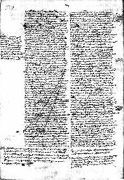
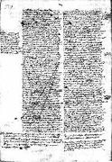

|  |
|---|
Fragmenta a P. M. Gils anno 1962 edita
et automato translata a Roberto Busa SJ in taenias magneticas
denuo recognovit Enrique Alarcón atque instruxit


|  |
|---|


[92257] Priora Super Sent., lib. 3 d. 23 q. 1 a. 1 co.  Responsio. Dicendum quod sicut dicit Commentator in secundo physicorum omne quod est ad utrumlibet omne quod est indeterminatum ad multa in quantum huiusmodi est in potentia. Cum ergo omne nihil agat secundum quod est in potentia sed secundum quod est in actu, ex eo quod est indeterminatum ad multa non egreditur aliqua actio, et propter hoc dicit Commentator in secundo physicorum quod ex eo quod est ad utrumlibet nihil fit. Ad hoc ergo quod aliquid tale operationem educat, per aliquid additum oportet quod ad unum determinetur. Quod autem aliquid determinetur ad aliquam operationem contingit dupliciter. Uno modo ex aliquo superiori movente, sicut instrumentum ab artifice movetur ad aliquam operationem determinate; vel ita quod in instrumento non sit aliqua dispositio repugnans motui quo movetur ab agente, vel quod in eo sit dispositio ad contrarium, sicut quando grave instrumentum movetur sursum. Alio modo ex aliqua forma inhaerente, sicut in his quae agunt ex seipsis. Sciendum ergo quod potentiae quibus actus humanos exercemus, et cognitivae et affectivae, sunt non determinatae ad unum, sicut patet de intellectu possibili et voluntate et aliis huiusmodi. Et quia supremae potentiae non possunt determinari ad unum ex aliquo superiori, oportet quod determinentur ex aliqua forma inhaerente; et propter hoc intellectus determinatur per species intelligibiles et per lumen intellectus agentis, secundum quod ex eis constituitur habitus principiorum et primorum intellectorum et sine hoc habitu non potest in aliquem actum exire. Sed vires inferiores aliquando determinantur ad actus proprios per hoc tantum quod sunt motae a superioribus, sicut quando aliquis non habens habitum scientiae considerat aliquid eorum quae ad scientiam pertinent naturali habitu (sicut dicit philosophus in primo elenchorum quod etiam idiotae dialectica utuntur), et sicut aliquis non habens habitum fortitudinis facit actum fortem ex ipso dictamine rationis. Sed quia in ipsis inferioribus potentiis est aliqua contraria inclinatio ad ea ad quae moventur ex superioribus (sicut in ratione propter imaginationem ex qua contingit falsitas, est inclinatio ad quaedam quae videntur et tamen sunt contraria intellectui principiorum, et similiter in irascibili et concupiscibili est inclinatio ad contraria eorum ad quae movet voluntas rationis, scilicet ad bona sensibilia), ideo accidit impedimentum in istis operationibus, et quandoque error, sicut ex obliquitate instrumentorum. Et ideo oportet quod similitudo superiorum potentiarum imprimatur et quasi sigilletur ut forma quaedam in inferioribus potentiis, et tunc inferiores potentiae etiam ex se ipsis habent determinationem ad actus ad quos movent superiores. Et sic illae actiones efficiuntur eis connaturales et non accidit impedimentum nec error in perficiendo dictos actus, sed subito et delectabiliter perficiuntur. Et hae formae sunt habitus.
Responsio. Dicendum quod sicut dicit Commentator in secundo physicorum omne quod est ad utrumlibet omne quod est indeterminatum ad multa in quantum huiusmodi est in potentia. Cum ergo omne nihil agat secundum quod est in potentia sed secundum quod est in actu, ex eo quod est indeterminatum ad multa non egreditur aliqua actio, et propter hoc dicit Commentator in secundo physicorum quod ex eo quod est ad utrumlibet nihil fit. Ad hoc ergo quod aliquid tale operationem educat, per aliquid additum oportet quod ad unum determinetur. Quod autem aliquid determinetur ad aliquam operationem contingit dupliciter. Uno modo ex aliquo superiori movente, sicut instrumentum ab artifice movetur ad aliquam operationem determinate; vel ita quod in instrumento non sit aliqua dispositio repugnans motui quo movetur ab agente, vel quod in eo sit dispositio ad contrarium, sicut quando grave instrumentum movetur sursum. Alio modo ex aliqua forma inhaerente, sicut in his quae agunt ex seipsis. Sciendum ergo quod potentiae quibus actus humanos exercemus, et cognitivae et affectivae, sunt non determinatae ad unum, sicut patet de intellectu possibili et voluntate et aliis huiusmodi. Et quia supremae potentiae non possunt determinari ad unum ex aliquo superiori, oportet quod determinentur ex aliqua forma inhaerente; et propter hoc intellectus determinatur per species intelligibiles et per lumen intellectus agentis, secundum quod ex eis constituitur habitus principiorum et primorum intellectorum et sine hoc habitu non potest in aliquem actum exire. Sed vires inferiores aliquando determinantur ad actus proprios per hoc tantum quod sunt motae a superioribus, sicut quando aliquis non habens habitum scientiae considerat aliquid eorum quae ad scientiam pertinent naturali habitu (sicut dicit philosophus in primo elenchorum quod etiam idiotae dialectica utuntur), et sicut aliquis non habens habitum fortitudinis facit actum fortem ex ipso dictamine rationis. Sed quia in ipsis inferioribus potentiis est aliqua contraria inclinatio ad ea ad quae moventur ex superioribus (sicut in ratione propter imaginationem ex qua contingit falsitas, est inclinatio ad quaedam quae videntur et tamen sunt contraria intellectui principiorum, et similiter in irascibili et concupiscibili est inclinatio ad contraria eorum ad quae movet voluntas rationis, scilicet ad bona sensibilia), ideo accidit impedimentum in istis operationibus, et quandoque error, sicut ex obliquitate instrumentorum. Et ideo oportet quod similitudo superiorum potentiarum imprimatur et quasi sigilletur ut forma quaedam in inferioribus potentiis, et tunc inferiores potentiae etiam ex se ipsis habent determinationem ad actus ad quos movent superiores. Et sic illae actiones efficiuntur eis connaturales et non accidit impedimentum nec error in perficiendo dictos actus, sed subito et delectabiliter perficiuntur. Et hae formae sunt habitus.
[92258] Priora Super Sent., lib. 3 d. 23 q. 1 a. 1 ad 5  Ad quintum dicendum quod sicut supra dist. 14 dictum est, in habitibus cognitivis non solum requiritur species intelligibilis sed etiam lumen intellectus agentis quo intellectus possibilis vel ratio perficitur ad opus, et similiter in affectivis potentiis requiritur aliqua qualitas quae ad opus perficiat, quamvis non species.
Ad quintum dicendum quod sicut supra dist. 14 dictum est, in habitibus cognitivis non solum requiritur species intelligibilis sed etiam lumen intellectus agentis quo intellectus possibilis vel ratio perficitur ad opus, et similiter in affectivis potentiis requiritur aliqua qualitas quae ad opus perficiat, quamvis non species.
[92259] Priora Super Sent., lib. 3 d. 23 q. 1 a. 2 co.  essentiam autem alicuius rei intellectus noster tripliciter cogn- comprehendit. Uno modo comprehendit essentias rerum sensibilium quae cadunt in sensum depurando ab abstrahendo ab omnibus individuantibus (...).
essentiam autem alicuius rei intellectus noster tripliciter cogn- comprehendit. Uno modo comprehendit essentias rerum sensibilium quae cadunt in sensum depurando ab abstrahendo ab omnibus individuantibus (...).
[92260] Priora Super Sent., lib. 3 d. 23 q. 2 a. 1 ad 1  Ad primum ergo dicendum, quod fides dicitur substantia, non quia sit in genere substantiae, sed quia quamdam proprietatem habet substantiae: sicut enim substantia est fundamentum et basis omnium aliorum entium, ita fides est fundamentum totius spiritualis aedificii. Et per hunc modum dicitur etiam quod superficies est substantia color- lux est hypostasis coloris, quia in natura lucis omnes colores fundantur.
Ad primum ergo dicendum, quod fides dicitur substantia, non quia sit in genere substantiae, sed quia quamdam proprietatem habet substantiae: sicut enim substantia est fundamentum et basis omnium aliorum entium, ita fides est fundamentum totius spiritualis aedificii. Et per hunc modum dicitur etiam quod superficies est substantia color- lux est hypostasis coloris, quia in natura lucis omnes colores fundantur.
[92261] Priora Super Sent., lib. 3 d. 23 q. 2 a. 5 ad 2  Ad secundum dicendum, quod fundamentum dicitur in spiritualibus metaphorice ad similitudinem fundamenti materialis. Potest autem ista similitudo attendi quantum ad duo: scilicet quantum ad ordinem, quia fundamentum praecedit alias partes; et etiam quantum ad virtutem fundamenti, quia fundamentum totum aedificium sustentat: quorum utrumque per similitudinem in fide invenitur: quia ipsa omnibus aliis naturaliter prior est, et aliae in ipsa firmantur: quia sine ipsa, impossibile est placere Deo, Hebr. 11. Fortitudo autem dicitur fundamentum quantum ad alterum, inquantum scilicet spirituale aedificium contra adversa firmum reddit; humilitas contra prospera; sed timor et ordine prior est his quae ad affectum pertinent in quantum per eum fit recessus a malo, sed tamen fidem sequitur, quae ostendit quid timendum sit; et iterum firmitatem praestat contra peccatorum impugnationem, quia qui timet Deum recedit a malo, Eccli.
Ad secundum dicendum, quod fundamentum dicitur in spiritualibus metaphorice ad similitudinem fundamenti materialis. Potest autem ista similitudo attendi quantum ad duo: scilicet quantum ad ordinem, quia fundamentum praecedit alias partes; et etiam quantum ad virtutem fundamenti, quia fundamentum totum aedificium sustentat: quorum utrumque per similitudinem in fide invenitur: quia ipsa omnibus aliis naturaliter prior est, et aliae in ipsa firmantur: quia sine ipsa, impossibile est placere Deo, Hebr. 11. Fortitudo autem dicitur fundamentum quantum ad alterum, inquantum scilicet spirituale aedificium contra adversa firmum reddit; humilitas contra prospera; sed timor et ordine prior est his quae ad affectum pertinent in quantum per eum fit recessus a malo, sed tamen fidem sequitur, quae ostendit quid timendum sit; et iterum firmitatem praestat contra peccatorum impugnationem, quia qui timet Deum recedit a malo, Eccli.
[92262] Priora Super Sent., lib. 3 d. 23 q. 3 a. 2 co.  Responsio. Dicendum quod sicut supra dictum est, habitus ad hoc sunt necessarii ut potentiae quae non sunt determin- indifferenter se habent ad multa per potentiam naturam non sunt determinatae ad unum actum bonum perfectum determinentur per habitum. Contingit autem quandoque quod inferior potentia non est determinata ad illum actum bonum perfectum sed superior (...).
Responsio. Dicendum quod sicut supra dictum est, habitus ad hoc sunt necessarii ut potentiae quae non sunt determin- indifferenter se habent ad multa per potentiam naturam non sunt determinatae ad unum actum bonum perfectum determinentur per habitum. Contingit autem quandoque quod inferior potentia non est determinata ad illum actum bonum perfectum sed superior (...).
[92263] Priora Super Sent., lib. 3 d. 23 q. 1 a. 3 arg. 1  Videtur quod non omnis virtus in nobis sit habitus: omne enim quod est, habet virtutem ad hoc quod sit, vel semper vel in tempore determinato, ut dicitur in primo caeli et mundi. Sed virtus qua aliquid est non est habitus, immo forma sua substantialis. Ergo non omnis virtus est habitus.
Videtur quod non omnis virtus in nobis sit habitus: omne enim quod est, habet virtutem ad hoc quod sit, vel semper vel in tempore determinato, ut dicitur in primo caeli et mundi. Sed virtus qua aliquid est non est habitus, immo forma sua substantialis. Ergo non omnis virtus est habitus.
[92264] Priora Super Sent., lib. 3 d. 23 q. 1 a. 3 arg. 2  Praeterea. Corpus nostrum, cum in eo abundet terra, est gave. Sed omni gravi est virtus qua moveatur deorsum, ut dicitur in secundo caeli et mundi, et haec est sua gravitas. Ergo gravitas est virtus quaedam et non est habitus, ergo idem quod prius.
Praeterea. Corpus nostrum, cum in eo abundet terra, est gave. Sed omni gravi est virtus qua moveatur deorsum, ut dicitur in secundo caeli et mundi, et haec est sua gravitas. Ergo gravitas est virtus quaedam et non est habitus, ergo idem quod prius.
[92265] Priora Super Sent., lib. 3 d. 23 q. 1 a. 3 arg. 3  Praeterea. Vis videtur idem esse quod virtus. Sed potentiae animae dicuntur vires. Ergo possunt dici virtutes. Ergo non omnis virtus in nobis est habitus.
Praeterea. Vis videtur idem esse quod virtus. Sed potentiae animae dicuntur vires. Ergo possunt dici virtutes. Ergo non omnis virtus in nobis est habitus.
[92266] Priora Super Sent., lib. 3 d. 23 q. 1 a. 3 arg. 4  Praeterea. Non laudamur neque meremur nisi propter virtutes.
Praeterea. Non laudamur neque meremur nisi propter virtutes.
 Sed non laudamur neque meremur ex hoc quod sumus habiles ad aliquid faciendum sicut neque ex hoc quod sumus potentes, sed ex hoc quod agimus. Ergo sicut potentia non est virtus, ita nec habitus sed solum actus.
Sed non laudamur neque meremur ex hoc quod sumus habiles ad aliquid faciendum sicut neque ex hoc quod sumus potentes, sed ex hoc quod agimus. Ergo sicut potentia non est virtus, ita nec habitus sed solum actus.
[92267] Priora Super Sent., lib. 3 d. 23 q. 1 a. 3 arg. 5 Praeterea. Virtus est circa difficile, ut dicitur in secundo Ethicorum. Sed omnis habitus tollit difficultatem. Ergo habitus non potest esse virtus, sed magis actus qui non est ex habitu.
[92268] Priora Super Sent., lib. 3 d. 23 q. 1 a. 3 s. c. 1 Sed contra est quod Augustinus dicit quod virtus est bona qualitas mentis, sed omnis qualitas mentis est habitus, ergo virtus est habitus.
[92269] Priora Super Sent., lib. 3 d. 23 q. 1 a. 3 s. c. 2  Praeterea. Hoc patet per philosophi diffinitionem in secundo Ethicorum, ubi dicit quod virtus est habitus voluntarius vel electivus, et cetera.
Praeterea. Hoc patet per philosophi diffinitionem in secundo Ethicorum, ubi dicit quod virtus est habitus voluntarius vel electivus, et cetera.
[92270] Priora Super Sent., lib. 3 d. 23 q. 1 a. 3 s. c. 3 Praeterea. Actus virtutum non sunt in dormiente, sed sunt ibi virtutes, ergo virtutes non sunt actus sed habitus.
[92271] Priora Super Sent., lib. 3 d. 23 q. 1 a. 3 co.  Responsio. Dicendum quod nomen virtutis secundum primam sui impositionem videtur in quandam violentiam sonare; unde dicit philosophus in tertio caeli et mundi quod motus accidentalis, idest violentus, est qui est a virtute non cum auxilio naturae, et sic sumitur in Ps. qui confidunt in virtute sua et cetera. Sed quia non potest aliquid alteri violentiam inferre nisi per potentiam perfectam per quam agat et non patiatur, inde tractum est nomen virtutis ad significandum omnem potentiam perfectam, sive qua potest in se ipso stare, sive qua potest operari; et sic dicitur in primo caeli et mundi quod virtus est ultimum potentiae et mensuratur ex hoc quod maxime potest, sicut dicitur virtutem suam ponere ad levandum pondus qui non potest ultra ferre. Et quia mala operatio contingit ex defectu potentiae agentis, ideo ultimum potentiae est ut actum bonum educat; et propter hoc dicit philosophus in secundo Ethicorum quod virtus est quae bonum facit habentem et bonum opus reddit, et in secundo VII physicorum quod est dispositio perfecti ad optimum, scilicet in quod potest. Virtus autem humana erit quae perfici--- potentiam humanam ad actum perfectum, --- enim virtutibus loquimur.
Responsio. Dicendum quod nomen virtutis secundum primam sui impositionem videtur in quandam violentiam sonare; unde dicit philosophus in tertio caeli et mundi quod motus accidentalis, idest violentus, est qui est a virtute non cum auxilio naturae, et sic sumitur in Ps. qui confidunt in virtute sua et cetera. Sed quia non potest aliquid alteri violentiam inferre nisi per potentiam perfectam per quam agat et non patiatur, inde tractum est nomen virtutis ad significandum omnem potentiam perfectam, sive qua potest in se ipso stare, sive qua potest operari; et sic dicitur in primo caeli et mundi quod virtus est ultimum potentiae et mensuratur ex hoc quod maxime potest, sicut dicitur virtutem suam ponere ad levandum pondus qui non potest ultra ferre. Et quia mala operatio contingit ex defectu potentiae agentis, ideo ultimum potentiae est ut actum bonum educat; et propter hoc dicit philosophus in secundo Ethicorum quod virtus est quae bonum facit habentem et bonum opus reddit, et in secundo VII physicorum quod est dispositio perfecti ad optimum, scilicet in quod potest. Virtus autem humana erit quae perfici--- potentiam humanam ad actum perfectum, --- enim virtutibus loquimur.
 Quia autem potentiae rationales humanae ut ex praedictis patet non sunt perfectae ex habitu non possunt in actum perfectum nisi per habitum, ideo habitus ut prius dictum est, ideo virtutes potentiarum sunt ipsi habitus quibus disponuntur perficiuntur ad actus illos, et non sunt virtutes ipsi actus, quia virtutis nomen dicitur per ordinem ad aliud sicut et nomen potentiae, actus autem non est ordinatus ad aliud in quantum huiusmodi.
Quia autem potentiae rationales humanae ut ex praedictis patet non sunt perfectae ex habitu non possunt in actum perfectum nisi per habitum, ideo habitus ut prius dictum est, ideo virtutes potentiarum sunt ipsi habitus quibus disponuntur perficiuntur ad actus illos, et non sunt virtutes ipsi actus, quia virtutis nomen dicitur per ordinem ad aliud sicut et nomen potentiae, actus autem non est ordinatus ad aliud in quantum huiusmodi.
[92272] Priora Super Sent., lib. 3 d. 23 q. 1 a. 3 ad 1  Ad primum ergo dicendum quod virtus essendi dicitur virtus secundum quod per eam aliquis potest stare in se ipso ne corrumpatur, virtus autem secundum quod nunc loquimur de virtutibus, est secundum quam aliquis potest facere perfectam operationem et stare in illa.
Ad primum ergo dicendum quod virtus essendi dicitur virtus secundum quod per eam aliquis potest stare in se ipso ne corrumpatur, virtus autem secundum quod nunc loquimur de virtutibus, est secundum quam aliquis potest facere perfectam operationem et stare in illa.
[92273] Priora Super Sent., lib. 3 d. 23 q. 1 a. 3 ad 2  Ad secundum dicendum quod gravitas potest dici virtus, sed non est ad operationem quae est hominis in quantum homo; et ideo de tali virtute non loquimur hic.
Ad secundum dicendum quod gravitas potest dici virtus, sed non est ad operationem quae est hominis in quantum homo; et ideo de tali virtute non loquimur hic.
[92274] Priora Super Sent., lib. 3 d. 23 q. 1 a. 3 ad 3  Ad tertium dicendum quod potentiae animae possunt dici vires vel virtutes in quantum perficiunt potentias corporales ad actus qui exercentur per organa, sed sic non loquimur hic de virtute.
Ad tertium dicendum quod potentiae animae possunt dici vires vel virtutes in quantum perficiunt potentias corporales ad actus qui exercentur per organa, sed sic non loquimur hic de virtute.
[92275] Priora Super Sent., lib. 3 d. 23 q. 1 a. 3 ad 4  Ad quartum dicendum quod actibus laudamur et meremur;
Ad quartum dicendum quod actibus laudamur et meremur;
 sed totam illam bonitatem ex qua sunt laudabiles actus vel meritorii, causant in eis habitus et non potentiae sufficienter. Et ideo habitus dicuntur virtutes, et non potentiae.
sed totam illam bonitatem ex qua sunt laudabiles actus vel meritorii, causant in eis habitus et non potentiae sufficienter. Et ideo habitus dicuntur virtutes, et non potentiae.
[92276] Priora Super Sent., lib. 3 d. 23 q. 1 a. 3 ad 5 Ad quintum dicendum quod virtus dicitur esse circa difficile quod habet difficultatem ex natura rei; quod tamen propter virtutem fit facile operanti, et delectabile.
[92277] Priora Super Sent., lib. 3 d. 23 q. 1 a. 3 qc. 1 nota 1  virtus essendi
virtus essendi
 vis idem quod virtus
vis idem quod virtus
 in naturalibus ipsae potentiae dicuntur virtutes
in naturalibus ipsae potentiae dicuntur virtutes
[92280] Priora Super Sent., lib. 3 d. 23 q. 3 a. 1 qc. 1 co.  Responsio. Dicendum ad primam quaestionem quod in agentibus ordinatis agentia inferiora agunt propter finem intentum fines agentium secundorum ordinantur ad finem agentis primi, sicut totum universum ordinatur ad bonum quod Deus est, ut philosophus dicit in XJ Metaph., quasi exercitus ad bonum ducis. Finis autem habet duplicem ordinem ad ea quae sunt ad finem: est enim prius natura et posterius in adeptione. Et ideo actio primi agentis est et prior et posterior. Prior in movendo, quia actiones omnes secundorum agentium fundantur super actione primi agentis, quae cum sit una communiter omnes firmans, specificatur eius effectus in hoc et in illo secundum exigentiam illius, sicut uno praecepto ducis praecipientis bellum unus accipit gladium, alius parat equum, et sic de aliis; et sic etiam esse quod est commune omnibus et specificatur diversimode in diversis attribuitur a philosophis actioni primae causae. Est autem posterior in coniungendo ordinando utendo illi- aliorum actibus ad finem proprium, et sic e converso actio primi agentis est formalis et completiva respectu prio- omnium praecedentium actionum. omnes actiones pri- aliorum agentium modificantur per actionem primi agentis. Cum ergo in viribus animae voluntas habeat --- locum primi motoris, eo quod eius obiectum est finis, actio eius est prior quodammodo actibus aliarum virium in quantum imperat eos, et est posterior in quantum utitur eis. Et ideo actus voluntatis uno modo specifica- accipit modum et determinationem ex viribus inferioribus, secundum quod intellectus exequitur imperium eius credendo, irascibilis abstinendo ab ira, et sic de aliis; alio vero m- et haec est modificatio determinatio seu formatio actus est secundum speciem rationem potentiae. Alio vero modo actus uniuscuiusque potentiae recipit modum ex actu voluntatis, et sic illud quod ponitur relinquitur ex voluntate in actibus aliarum potentiarum est fo-. Alio vero modo actus aliarum virium modificantur ex voluntate in quantum imponit eis modum secundum quem congruunt ad usum quo utitur eis in finem, et iste modus quem voluntas imponit, formaliter se habet ad actum illius potentiae. Patet ergo ex dictis quod, cum credere sit actus intellectus secundum quod est motus a voluntate, quod habet duplicem formam: unam ex natura potentiae quae exequitur imperium voluntatis secundum modum suum, et ex hac forma fides habet rationem fidei; aliam vero formam habet ex voluntate secundum hoc quod voluntas utitur isto actu in finem suum, et ex hac forma fidei actus habet quod sit bonus in ordine ad finem quia autem et respectu huius formae prima forma materialis est. Quia autem caritas voluntatem perficit in ordine, ideo per modum istum fides per caritatem formatur, sicut et aliae virtutes quae imperium voluntatis sequuntur.
Responsio. Dicendum ad primam quaestionem quod in agentibus ordinatis agentia inferiora agunt propter finem intentum fines agentium secundorum ordinantur ad finem agentis primi, sicut totum universum ordinatur ad bonum quod Deus est, ut philosophus dicit in XJ Metaph., quasi exercitus ad bonum ducis. Finis autem habet duplicem ordinem ad ea quae sunt ad finem: est enim prius natura et posterius in adeptione. Et ideo actio primi agentis est et prior et posterior. Prior in movendo, quia actiones omnes secundorum agentium fundantur super actione primi agentis, quae cum sit una communiter omnes firmans, specificatur eius effectus in hoc et in illo secundum exigentiam illius, sicut uno praecepto ducis praecipientis bellum unus accipit gladium, alius parat equum, et sic de aliis; et sic etiam esse quod est commune omnibus et specificatur diversimode in diversis attribuitur a philosophis actioni primae causae. Est autem posterior in coniungendo ordinando utendo illi- aliorum actibus ad finem proprium, et sic e converso actio primi agentis est formalis et completiva respectu prio- omnium praecedentium actionum. omnes actiones pri- aliorum agentium modificantur per actionem primi agentis. Cum ergo in viribus animae voluntas habeat --- locum primi motoris, eo quod eius obiectum est finis, actio eius est prior quodammodo actibus aliarum virium in quantum imperat eos, et est posterior in quantum utitur eis. Et ideo actus voluntatis uno modo specifica- accipit modum et determinationem ex viribus inferioribus, secundum quod intellectus exequitur imperium eius credendo, irascibilis abstinendo ab ira, et sic de aliis; alio vero m- et haec est modificatio determinatio seu formatio actus est secundum speciem rationem potentiae. Alio vero modo actus uniuscuiusque potentiae recipit modum ex actu voluntatis, et sic illud quod ponitur relinquitur ex voluntate in actibus aliarum potentiarum est fo-. Alio vero modo actus aliarum virium modificantur ex voluntate in quantum imponit eis modum secundum quem congruunt ad usum quo utitur eis in finem, et iste modus quem voluntas imponit, formaliter se habet ad actum illius potentiae. Patet ergo ex dictis quod, cum credere sit actus intellectus secundum quod est motus a voluntate, quod habet duplicem formam: unam ex natura potentiae quae exequitur imperium voluntatis secundum modum suum, et ex hac forma fides habet rationem fidei; aliam vero formam habet ex voluntate secundum hoc quod voluntas utitur isto actu in finem suum, et ex hac forma fidei actus habet quod sit bonus in ordine ad finem quia autem et respectu huius formae prima forma materialis est. Quia autem caritas voluntatem perficit in ordine, ideo per modum istum fides per caritatem formatur, sicut et aliae virtutes quae imperium voluntatis sequuntur.
[92281] Priora Super Sent., lib. 3 d. 25 q. 2 a. 2 qc. 2 co.  et si aliquis praedicato- instructorem non haberet, Deus illi revelaret si quod in se est faceret nisi ex culpa sua removeret.
et si aliquis praedicato- instructorem non haberet, Deus illi revelaret si quod in se est faceret nisi ex culpa sua removeret.
[92282] Priora Super Sent., lib. 3 d. 26 q. 1 a. 1 co. Responsio. Dicendum quod spes ad appetitum pertinet, cum attendat rationem boni, ut in littera dicitur. Sciendum autem quod ea quae ad appetitum pertinent praecipue sensitivum quadrupliciter differre inveniuntur septem modis. Primo --- quod potest significari motus appetitivae virtutis simpliciter, non consignificando aliquam dispositionem relictam in appetente ex actione appetibilis in appetitum, vel potest significari cum dispositione illa, et quantum ad hoc differt appetere ab omnibus aliis. Secundo --- quod dispositio consignificata relinquitur ab appetibili vel secundum rationem bonitatis et convenientiae tantum, sicut amare, gaudere et huiusmodi, vel secundum ammixtionem difficultatis ad bonitatem et convenientiam, in quo consistit ratio ardui, sicut sperare audere et confidere. Tertio ex hoc quod dispositio consignificata in actu appetitus relinquitur ab appetibili secundum quod est apprehensum, sicut concupiscere et desiderare, vel secundum quod est realiter coniunctum, sicut gaudium et delectatio. Quarto ex hoc quod illud appetibile apprehendens appetibile vel est in motu ad ipsum appetibile, sicut concupiscere et desiderare, quod est rei non habitae, ut dicit Augustinus, vel est quasi in termino iam habens illud quod appetit, et sic ex apprehensione boni habiti causatur amor. Quinto ex hoc ex differentia boni et mali, sicut differt amor et odium, gaudium a tristitia, spes a timore. Sexto secundum simplex et compositum ex hoc quod in nomine passionis importatur excessus, sicut audacia, praesumptio et voluptas, vel passio sine excessu significatur, sicut delectatio, amor et huiusmodi. Septimo secundum simplex et compositum, sicut ira differt a tristitia; tristitia enim est simplex passio ex coniunctione convenientis nocivi, sed dolor
[92283] Priora Super Sent., lib. 3 d. 26 q. 1 a. 3 co. 1  (...). Passionum ergo in concupiscibili existentium quaedam causantur ex hoc quod appetibile est praesens in apprehensione, quaedam autem ex hoc quod est praesens secundum rem. Eorum autem quae sunt praesens causantur ex apprehensione appetibilis, quaedam autem ex ipso appetibili praesente. Quae autem causantur ex apprehensione appetibilis, vel causantur ex apprehensione ipsius nondum habiti, vel iam habiti. Ex quibus colligitur tria esse genera passionum quae in concupiscibili sunt, quorum unumquodque ulterius dividitur per bonum et malum. Passio ergo prima concupiscibilis causata ex apprehensione boni nondum habiti est concupiscentia vel desiderium; passio vero secunda causata ex apprehensione mali nondum habiti innominata est, dicatur autem fuga vel vitatio; passio vero tertia causata ex apprehensione boni habiti est amor, cui contrariatur quarta quae est odium; passio vero quinta causata ex apprehensione ipso appetibili praesente est delectatio vel gaudium; passio sexta vero est contraria, quae est dolor vel tristitia. Sciendum tamen quod bonum quod oportet esse secundum rem praesens ad delectationem est duplex: unum est ipsa res naturae quae est conveniens sensui, vel e contrario, et ex hoc causatur delectatio naturalis; et quia res non coniungitur nobis per aliquem sensum nisi per gustum et tactum, ideo delectatio et dolor et gustum ut est quidam tactus, ideo dicit Avicenna quod solae delectationes tactus sunt simpliciter delectationes, et Aristoteles dicit quod circa eas tantum est temperantia et continentia; et harum delectationum est proprie concupiscibilis. Aliud est ipsa operatio conveniens potentiae animae, et hae dicuntur delectationes animales, et hae inveniuntur in omnibus potentiis. Primae ergo dicuntur tantum delectationes et dolores, sed secundae dicuntur In primis ergo convenit doloris et delectationis nomen, in secundis autem magis gaudii et tristitiae. Laetitia autem (...).
(...). Passionum ergo in concupiscibili existentium quaedam causantur ex hoc quod appetibile est praesens in apprehensione, quaedam autem ex hoc quod est praesens secundum rem. Eorum autem quae sunt praesens causantur ex apprehensione appetibilis, quaedam autem ex ipso appetibili praesente. Quae autem causantur ex apprehensione appetibilis, vel causantur ex apprehensione ipsius nondum habiti, vel iam habiti. Ex quibus colligitur tria esse genera passionum quae in concupiscibili sunt, quorum unumquodque ulterius dividitur per bonum et malum. Passio ergo prima concupiscibilis causata ex apprehensione boni nondum habiti est concupiscentia vel desiderium; passio vero secunda causata ex apprehensione mali nondum habiti innominata est, dicatur autem fuga vel vitatio; passio vero tertia causata ex apprehensione boni habiti est amor, cui contrariatur quarta quae est odium; passio vero quinta causata ex apprehensione ipso appetibili praesente est delectatio vel gaudium; passio sexta vero est contraria, quae est dolor vel tristitia. Sciendum tamen quod bonum quod oportet esse secundum rem praesens ad delectationem est duplex: unum est ipsa res naturae quae est conveniens sensui, vel e contrario, et ex hoc causatur delectatio naturalis; et quia res non coniungitur nobis per aliquem sensum nisi per gustum et tactum, ideo delectatio et dolor et gustum ut est quidam tactus, ideo dicit Avicenna quod solae delectationes tactus sunt simpliciter delectationes, et Aristoteles dicit quod circa eas tantum est temperantia et continentia; et harum delectationum est proprie concupiscibilis. Aliud est ipsa operatio conveniens potentiae animae, et hae dicuntur delectationes animales, et hae inveniuntur in omnibus potentiis. Primae ergo dicuntur tantum delectationes et dolores, sed secundae dicuntur In primis ergo convenit doloris et delectationis nomen, in secundis autem magis gaudii et tristitiae. Laetitia autem (...).
[92284] Priora Super Sent., lib. 3 d. 26 q. 1 a. 3 co. 2  Earum autem passionum quae in irascibili sunt, per se loquendo non est invenire aliquas quae causentur ex ipsa re praesente vel ex apprehensione eius iam habitae, ut dictum est, nisi mediante concupiscibili, quia cum irascibilis sit quasi vindex concupiscibilis, laesivum praesens quod facit passionem ad quam defendendam et roborandam irascibilis ordinatur. Passio ergo quae est in irascibili distinguitur sic: quia vel uno modo causatur ex apprehensione rei nondum habitae, vel bonae quae difficulter habetur, et sic est spes, vel malae et sic est timor quae difficulter vitatur, et sic est timor. Alio Et hae passiones sunt simpliciter ipsius irascibili. Alio modo causatur passio in irascibili ex passione relicta in concupiscibili ex praesentia sui appetibilis; irascibilis autem servit concupiscibili et in bono et in malo: in bono ut propter difficultatem non dimittatur, in malo ut propter difficultatem non obstante difficultate resistatur. Ex quo autem appetibile iam praesens est
Earum autem passionum quae in irascibili sunt, per se loquendo non est invenire aliquas quae causentur ex ipsa re praesente vel ex apprehensione eius iam habitae, ut dictum est, nisi mediante concupiscibili, quia cum irascibilis sit quasi vindex concupiscibilis, laesivum praesens quod facit passionem ad quam defendendam et roborandam irascibilis ordinatur. Passio ergo quae est in irascibili distinguitur sic: quia vel uno modo causatur ex apprehensione rei nondum habitae, vel bonae quae difficulter habetur, et sic est spes, vel malae et sic est timor quae difficulter vitatur, et sic est timor. Alio Et hae passiones sunt simpliciter ipsius irascibili. Alio modo causatur passio in irascibili ex passione relicta in concupiscibili ex praesentia sui appetibilis; irascibilis autem servit concupiscibili et in bono et in malo: in bono ut propter difficultatem non dimittatur, in malo ut propter difficultatem non obstante difficultate resistatur. Ex quo autem appetibile iam praesens est
[92285] Priora Super Sent., lib. 3 d. 26 q. 2 a. 1 co.  Responsio. Dicendum quod de ratione virtutis strictissime acceptae, secundum quod communiter in usu est nomen virtutis, tria quatuor requiruntur. Primum est quod actus ad quem perficit ille habitu- pertineat ad aliquam potentiam rationalem vel per essentiam vel per participationem; alias non esset virtus humanaum quid. Secundum est quod determinet potentiam ad unum importet ordinet potentiam ad aliquid ad quod est secundum se ordinatum. bonum illius potentiae; alias hominis; alias non esset bona qualitas. Tertium est quod determinet potentiam ad illud unum, faciens in ea inclinationem ut in ipsum tendat per modum naturae; alias non esset habitus. Quartum est ut actus eius dependeat ex volun- praesupponat actum voluntatis, vel includat; alias non esset meritorius, cum principium merendi sit in voluntate. Haec autem quatuor in spe inveniuntur. Cum enim, ut ex dictis patet, non pos- sit vel in irascibili, quae est rationalis per participationem, vel in affectu intellectivae partis quod est quaei pertinet ad partem rationalem per essentiam, constat quod spes est in potentia aliquo modo rationali. Ordinat etiam potentiam ad id quod est optimum homini, quia est expectatio futurae beatitudinis. Similiter etiam spes etiam de ratione nominis ponit importat quandam inclinationem determinatam in aliquid, secundum quod addit certitudinem supra expectationem. Praesupponit etiam vel includit voluntatis actum, quia nullus sperat nisi quod vult, cum spes sit de bono aestimato. Unde patet quod spes virtus est.
Responsio. Dicendum quod de ratione virtutis strictissime acceptae, secundum quod communiter in usu est nomen virtutis, tria quatuor requiruntur. Primum est quod actus ad quem perficit ille habitu- pertineat ad aliquam potentiam rationalem vel per essentiam vel per participationem; alias non esset virtus humanaum quid. Secundum est quod determinet potentiam ad unum importet ordinet potentiam ad aliquid ad quod est secundum se ordinatum. bonum illius potentiae; alias hominis; alias non esset bona qualitas. Tertium est quod determinet potentiam ad illud unum, faciens in ea inclinationem ut in ipsum tendat per modum naturae; alias non esset habitus. Quartum est ut actus eius dependeat ex volun- praesupponat actum voluntatis, vel includat; alias non esset meritorius, cum principium merendi sit in voluntate. Haec autem quatuor in spe inveniuntur. Cum enim, ut ex dictis patet, non pos- sit vel in irascibili, quae est rationalis per participationem, vel in affectu intellectivae partis quod est quaei pertinet ad partem rationalem per essentiam, constat quod spes est in potentia aliquo modo rationali. Ordinat etiam potentiam ad id quod est optimum homini, quia est expectatio futurae beatitudinis. Similiter etiam spes etiam de ratione nominis ponit importat quandam inclinationem determinatam in aliquid, secundum quod addit certitudinem supra expectationem. Praesupponit etiam vel includit voluntatis actum, quia nullus sperat nisi quod vult, cum spes sit de bono aestimato. Unde patet quod spes virtus est.
[92286] Priora Super Sent., lib. 3 d. 26 q. 2 a. 1 ad 1  Ad primum ergo dicendum quod nulla passio potest esse neque virtus neque vitium neque donum neque fructus. Unde nomina passionum quae ad virtutes praedicta extenduntur, aequivoce sumuntur secundum quod significant passionem et secundum quod significant virtutem vel vitium. Ratio autem praedictae extensionis nominum est duplex. Quandoque enim virtus, quae est in medio passionum, magis appropinquat ad unam passionem quam ad aliam, sicut fortis magis habet actum similem audaciae quam timori; et ideo ipsa virtus fortitudinis quandoque dicitur audacia, et oppositum vitium dicitur timor, et similiter vitium oppositum le- mansuetudini dicitur ira. Aliquando vero contingit ex hoc quod nomina passionum sensitivae partis, ut prius dictum est, transumuntur ad significandum actus voluntatis; unde habitus perficientes ad actus voluntatis nominantur nominibus illarum passionum ex quarum similitudine actus voluntatis nomina sortiuntur, et ita est de spe et amore. Unde accidit quatuor principalibus passionibus quod nomine unius nominetur virtus vel donum vel vitium vel fructus.
Ad primum ergo dicendum quod nulla passio potest esse neque virtus neque vitium neque donum neque fructus. Unde nomina passionum quae ad virtutes praedicta extenduntur, aequivoce sumuntur secundum quod significant passionem et secundum quod significant virtutem vel vitium. Ratio autem praedictae extensionis nominum est duplex. Quandoque enim virtus, quae est in medio passionum, magis appropinquat ad unam passionem quam ad aliam, sicut fortis magis habet actum similem audaciae quam timori; et ideo ipsa virtus fortitudinis quandoque dicitur audacia, et oppositum vitium dicitur timor, et similiter vitium oppositum le- mansuetudini dicitur ira. Aliquando vero contingit ex hoc quod nomina passionum sensitivae partis, ut prius dictum est, transumuntur ad significandum actus voluntatis; unde habitus perficientes ad actus voluntatis nominantur nominibus illarum passionum ex quarum similitudine actus voluntatis nomina sortiuntur, et ita est de spe et amore. Unde accidit quatuor principalibus passionibus quod nomine unius nominetur virtus vel donum vel vitium vel fructus.
[92287] Priora Super Sent., lib. 3 d. 26 q. 2 a. 2 arg. 2 Praeterea. Virtus theologica habet idem pro obiecto et fine. Sed obiectum spei est arduum, quod non potest habere rationem finis, quia habet bonitatem ordinatam ad aliud, ut supra dictum est. Ergo spes non est virtus theologica.
[92288] Priora Super Sent., lib. 3 d. 26 q. 2 a. 2 ad 2 Ad secundum dicendum quod arduum dicitur aliquid habens difficultatem. Nulla autem res dum postquam habetur difficultatem habet. Unde obiectum spei est finis secundum quod nondum habitus, sicut et obiectum fidei est primum verum nondum visum. Fides ergo et spes sunt de eo quod est finis ultimus secundum rem, sed non sub ratione illa prout est finis ultimus sed in quantum est obiectum operationis antequam perveniatur ad ipsum. Operatio autem quae est circa finem antequam perveniatur ad ipsum, ordinatur ad operationem quae est de fine cum perventum ad ipsum fuerit; et ideo obiectum fidei et spei, quantum ad rationem quam habet ex natura rei, non ordinatur ad aliud, sed quantum ad rationem quam habet ex comparatione eius cuius est finis ad ipsum, quia finis non habitus in quantum huiusmodi ordinatur ad finem non habitum, et verum non visum in quantum huiusmodi ordinatur ad verum visum, quamvis res sit eadem utrobique.
[92289] Priora Super Sent., lib. 3 d. 27 q. 1 a. 2 s. c. 4  Praeterea. Operatio concupiscibilis praesupponit rationem sui obiecti sicut et operatio cuiuslibet alterius potentiae. Sed obiectum concupiscibilis est bonum. Ergo ad motum concupiscibilis praesupponitur quod illud quod concupiscitur sit bonum et ei qui concupiscit Praeterea. Obiectum concupiscibilis est bonum aut ergo bonum sub ratione qua est bonum concu- concupiscenti conveniens; aut ergo sub ratione qua est conveniens concupiscibili, aut prout est conveniens communiter concupiscenti. Si primo modo: bonum autem unicuique potentiae conveniens est per comparationem ad suum actum, sicut bonum conveniens visui quod est bonum ad videndum. Ergo obiectum concupiscibilis non erit bonum sub alia ratione nisi quia est bonum ad concupiscendum. Sed per prius desideratur illud ad quod aliquid est bonum quam quod est bonum ad illud, sicut finis his quae sunt ad finem. Ergo per prius concupiscibilis concupiscit se concupiscere quam illud quod est bonum ad concupiscendum. Sed actus simpliciter tendens in obiectum praecedit reflexionem actus super actum. Ergo prius naturaliter concupiscit aliquod bonum quam concupiscat se concupiscere, sicut prius naturaliter video quam video me videre; ergo bonum sub ratione qua est bonum ad concupiscendum non est principaliter obiectum concupiscibilis sed bonum quod est absolute conveniens concupiscenti. Sed quicquid est bonum secundum unamquamque potentiam est concupiscenti conveniens. Ergo appetere bonum uniuscuiusque potentiae pertinet ad concupiscibilem, et eadem ratione amor. Et ita amor non erit nisi in concupiscibili.
Praeterea. Operatio concupiscibilis praesupponit rationem sui obiecti sicut et operatio cuiuslibet alterius potentiae. Sed obiectum concupiscibilis est bonum. Ergo ad motum concupiscibilis praesupponitur quod illud quod concupiscitur sit bonum et ei qui concupiscit Praeterea. Obiectum concupiscibilis est bonum aut ergo bonum sub ratione qua est bonum concu- concupiscenti conveniens; aut ergo sub ratione qua est conveniens concupiscibili, aut prout est conveniens communiter concupiscenti. Si primo modo: bonum autem unicuique potentiae conveniens est per comparationem ad suum actum, sicut bonum conveniens visui quod est bonum ad videndum. Ergo obiectum concupiscibilis non erit bonum sub alia ratione nisi quia est bonum ad concupiscendum. Sed per prius desideratur illud ad quod aliquid est bonum quam quod est bonum ad illud, sicut finis his quae sunt ad finem. Ergo per prius concupiscibilis concupiscit se concupiscere quam illud quod est bonum ad concupiscendum. Sed actus simpliciter tendens in obiectum praecedit reflexionem actus super actum. Ergo prius naturaliter concupiscit aliquod bonum quam concupiscat se concupiscere, sicut prius naturaliter video quam video me videre; ergo bonum sub ratione qua est bonum ad concupiscendum non est principaliter obiectum concupiscibilis sed bonum quod est absolute conveniens concupiscenti. Sed quicquid est bonum secundum unamquamque potentiam est concupiscenti conveniens. Ergo appetere bonum uniuscuiusque potentiae pertinet ad concupiscibilem, et eadem ratione amor. Et ita amor non erit nisi in concupiscibili.
[92290] Priora Super Sent., lib. 3 d. 27 q. 1 a. 3 ad 2  Ad secundum dicendum quod amor bonum est perfectio appetentis in quantum conveniens est sibi secundum quamcumque partem eius, et est etiam perfectio appetitus in quantum est obiectum eius. Unde bonum informat et ipsum appetentem secundum illam partem secundum quam est sibi conveniens, et sic causatur delectatio; unde consequitur coniunctionem rei, ut dictum est. Informat etiam bonum appetitum, et sic causatur amor. Unde supra dictum est quod consequitur apprehensionem, loquendo de amore in cognoscentibus, in quibus proprie invenitur. Et quia appetitus rei praecedit, ad minus in via generationis consecutionem ipsius. Quandoque autem delectatio praecedit ordine naturae (sicut finis ea quae sunt ad finem), quando aliquid propter delectationem suam amatur, et secundum hoc delectatio causa est amoris. Sed hoc accidit quia in his quae amantur propter delectationem, delectatio ipsa amatur principaliter, non illa quae delectant, et tunc delectatio accipitur ut quoddam bonum quod est obiectum amoris. Sed quia non solum delectatio habet rationem boni, ideo contingit aliquid aliud amari quam delectationem, et tunc res delectans est finis amoris, non ipsa delectatio, quia amans transformat magis se in amatum quam e converso; delectatio autem est effectus amati convenientis in amato quando iam coniunctum est ei, unde ipsam non quaerit qui vere aliquid amat, sed ipsum amatum. Est etiam amor vehementior passio quam delectatio. Et ita amor aliquo modo semper praecedit et causat delectationem, delectatio autem quandoque per accidens causat amorem et praecedit ipsum. Unde amor simpliciter prior est.
Ad secundum dicendum quod amor bonum est perfectio appetentis in quantum conveniens est sibi secundum quamcumque partem eius, et est etiam perfectio appetitus in quantum est obiectum eius. Unde bonum informat et ipsum appetentem secundum illam partem secundum quam est sibi conveniens, et sic causatur delectatio; unde consequitur coniunctionem rei, ut dictum est. Informat etiam bonum appetitum, et sic causatur amor. Unde supra dictum est quod consequitur apprehensionem, loquendo de amore in cognoscentibus, in quibus proprie invenitur. Et quia appetitus rei praecedit, ad minus in via generationis consecutionem ipsius. Quandoque autem delectatio praecedit ordine naturae (sicut finis ea quae sunt ad finem), quando aliquid propter delectationem suam amatur, et secundum hoc delectatio causa est amoris. Sed hoc accidit quia in his quae amantur propter delectationem, delectatio ipsa amatur principaliter, non illa quae delectant, et tunc delectatio accipitur ut quoddam bonum quod est obiectum amoris. Sed quia non solum delectatio habet rationem boni, ideo contingit aliquid aliud amari quam delectationem, et tunc res delectans est finis amoris, non ipsa delectatio, quia amans transformat magis se in amatum quam e converso; delectatio autem est effectus amati convenientis in amato quando iam coniunctum est ei, unde ipsam non quaerit qui vere aliquid amat, sed ipsum amatum. Est etiam amor vehementior passio quam delectatio. Et ita amor aliquo modo semper praecedit et causat delectationem, delectatio autem quandoque per accidens causat amorem et praecedit ipsum. Unde amor simpliciter prior est.
[92291] Priora Super Sent., lib. 3 d. 27 q. 1 a. 4 ad 2  Ad secundum dicendum quod perfectum et imperfectum possunt dupliciter considerari: vel in uno aliquo, et sic perfectum praecedit imperfectum natura sed imperfectum praecedit duratione vel in via generationis, vel possunt considerari simpliciter, et sic perfectum etiam in via generationis et durationis praecedit qui omne imperfectum ab aliquo perfecto exordium sumpsit. Consideratio ergo voluntatis et intellectus in quantum sunt proprietates quaedam eius in quo sunt, est consideratio ipsorum secundum esse eorum et etiam hic non attenditur nisi ordo naturae; unde secundum hoc intellectus et perfectior et prior naturaliter est quam voluntas. Consideratio vero eorum secundum ordinem ad actus est consideratio quasi in via generationis; et sic intellectus humanus est prior voluntate humana, sed sequitur voluntatem divinam ordinantem ipsum ad suum actum naturalem per appetitum naturalem ei inditum.
Ad secundum dicendum quod perfectum et imperfectum possunt dupliciter considerari: vel in uno aliquo, et sic perfectum praecedit imperfectum natura sed imperfectum praecedit duratione vel in via generationis, vel possunt considerari simpliciter, et sic perfectum etiam in via generationis et durationis praecedit qui omne imperfectum ab aliquo perfecto exordium sumpsit. Consideratio ergo voluntatis et intellectus in quantum sunt proprietates quaedam eius in quo sunt, est consideratio ipsorum secundum esse eorum et etiam hic non attenditur nisi ordo naturae; unde secundum hoc intellectus et perfectior et prior naturaliter est quam voluntas. Consideratio vero eorum secundum ordinem ad actus est consideratio quasi in via generationis; et sic intellectus humanus est prior voluntate humana, sed sequitur voluntatem divinam ordinantem ipsum ad suum actum naturalem per appetitum naturalem ei inditum.
[92292] Priora Super Sent., lib. 3 d. 27 q. 1 a. 4 ad 12  Ad XIJ dicendum quod hoc quod voluntas non cogitur, ex hoc contingit quod tenet gradum ultim- primum habet infinitatem quandam in inclinatione ad res alias, unde operatio sua non ---terminatur per aliaud, quod est cogi, sed ipsa determinat operationes aliorum, quod est movere omnes alias potentias; et in hac consideratione dictum est quod voluntas intellectum excedit.
Ad XIJ dicendum quod hoc quod voluntas non cogitur, ex hoc contingit quod tenet gradum ultim- primum habet infinitatem quandam in inclinatione ad res alias, unde operatio sua non ---terminatur per aliaud, quod est cogi, sed ipsa determinat operationes aliorum, quod est movere omnes alias potentias; et in hac consideratione dictum est quod voluntas intellectum excedit.
[92293] Priora Super Sent., lib. 3 d. 27 q. 1 a. 4 ad 13  Ad XIIJ dicendum quod amor proprie loquendo non est nisi in illis in quibus est cognitio, sed tamen participative etiam ad alia extenditur, non autem cognitio, quia cognitio inclinatio vel ordo rei ad rem potest esse, ad quam pertinet amor, potest esse ex alio non a se ipso, secundum quod dicitur appetitus in carentibus cognitione; essendi autem perfectio non est nisi ex his quae insunt, et ad hoc pertinet cognitio.
Ad XIIJ dicendum quod amor proprie loquendo non est nisi in illis in quibus est cognitio, sed tamen participative etiam ad alia extenditur, non autem cognitio, quia cognitio inclinatio vel ordo rei ad rem potest esse, ad quam pertinet amor, potest esse ex alio non a se ipso, secundum quod dicitur appetitus in carentibus cognitione; essendi autem perfectio non est nisi ex his quae insunt, et ad hoc pertinet cognitio.
[92294] Priora Super Sent., lib. 3 d. 27 q. 2 a. 1 co.  Sciendum autem quod amor est alicuius rei dupliciter: uno modo alicuius rei inhaerentis ad quam intellectus se trahit affectus ut ipsam participet, sicut quod quis amat dulcedinem in vino et delectationem in muliere; et iste amor dicitur concupiscentiae proprie loquendo. Quia autem amor est unitivus affectuum informans appetitum ex ipso amato, appetitus autem ad reim praesentiam ipsam ordinatur includuntur autem ab amore sive dilectione quaecumque ex necessitate amoris consequuntur. Cum autem amor, ut prius dictum est, faciat amatum quasi formam amantis appetitus amantis, oportet eandem proportionem amati existere ad appetitum amantis quae est formae naturalis ad appetitum naturalem. Forma autem in naturalibus et est terminus motus in quantum ante consecutionem formae omnia propter ipsam natura operatur et in ipsa iam habita appetitus naturalis quietatur, et est principium operationis rei iam habentis formam, quia secundum exigentiam formae res operatur. Amans autem Amor autem terminatur quandoque ad ipsum amantem, et alia quae extra se ipsum sunt ad se ipsum retorquet, sicut accidit unde illa quae sicut ea quae propter delectationem vel lucrum amare dicitur. Unde ea non proprie amat sed se ipsum, alia vero sibi desiderat, et propter hoc horum amatorum concupiscentia dicitur; unde amor sui includit concupiscentiam eorum quae propter se diligit aliquis. Quandoque vero terminatur amor ad aliquid extra se, et tunc amor alia amans alia in illud amatum retorquet; et secundum affectum, in quantum appetit ei bona quae non habet et congaudet de his quae habet, et sic includitur in amore benivolentia ad amicum; et iterum secundum effectum, in quantum ad ipsum bona operatur et se ipsum et sua ei communicat, et sic includitur beneficentia. Oportet etiam ut amatum efficiatur regula appetitui in his quae eligit, sicut forma rei naturali, et ex hac parte includitur concordia in amore, secundum quam aliquis vult et operatur eadem quae amicus in his quae voluntati subiacent, qua amor ligat, non in opinionibus quae voluntatem praecedunt, cum sint in intellectu; unde opiniones diversae eaedem de caelestibus et speculativis non pertinent ad amicitiam, ut dicitur in IX Ethicorum. Amor autem (...).
Sciendum autem quod amor est alicuius rei dupliciter: uno modo alicuius rei inhaerentis ad quam intellectus se trahit affectus ut ipsam participet, sicut quod quis amat dulcedinem in vino et delectationem in muliere; et iste amor dicitur concupiscentiae proprie loquendo. Quia autem amor est unitivus affectuum informans appetitum ex ipso amato, appetitus autem ad reim praesentiam ipsam ordinatur includuntur autem ab amore sive dilectione quaecumque ex necessitate amoris consequuntur. Cum autem amor, ut prius dictum est, faciat amatum quasi formam amantis appetitus amantis, oportet eandem proportionem amati existere ad appetitum amantis quae est formae naturalis ad appetitum naturalem. Forma autem in naturalibus et est terminus motus in quantum ante consecutionem formae omnia propter ipsam natura operatur et in ipsa iam habita appetitus naturalis quietatur, et est principium operationis rei iam habentis formam, quia secundum exigentiam formae res operatur. Amans autem Amor autem terminatur quandoque ad ipsum amantem, et alia quae extra se ipsum sunt ad se ipsum retorquet, sicut accidit unde illa quae sicut ea quae propter delectationem vel lucrum amare dicitur. Unde ea non proprie amat sed se ipsum, alia vero sibi desiderat, et propter hoc horum amatorum concupiscentia dicitur; unde amor sui includit concupiscentiam eorum quae propter se diligit aliquis. Quandoque vero terminatur amor ad aliquid extra se, et tunc amor alia amans alia in illud amatum retorquet; et secundum affectum, in quantum appetit ei bona quae non habet et congaudet de his quae habet, et sic includitur in amore benivolentia ad amicum; et iterum secundum effectum, in quantum ad ipsum bona operatur et se ipsum et sua ei communicat, et sic includitur beneficentia. Oportet etiam ut amatum efficiatur regula appetitui in his quae eligit, sicut forma rei naturali, et ex hac parte includitur concordia in amore, secundum quam aliquis vult et operatur eadem quae amicus in his quae voluntati subiacent, qua amor ligat, non in opinionibus quae voluntatem praecedunt, cum sint in intellectu; unde opiniones diversae eaedem de caelestibus et speculativis non pertinent ad amicitiam, ut dicitur in IX Ethicorum. Amor autem (...).
[92295] Priora Super Sent., lib. 3 d. 27 q. 2 a. 1 ad 1  Ad primum ergo dicendum, quod amicitia quaelibet concupiscentiam seu desiderium includit, quia in amicitia qua amicus amor quo quis diligit amicum in amantem retorquetur, est concupiscentia illius rei secundum quam amatus in amantem retorquetur, ut lucri vel delectationis; in amicitia autem qua amor amantis in amato figitur, est concupiscentia ipsius rei amatae ut se in ipsam trahat et non e converso. Et ideo amicus concu---scit videre amicum et simul cum eo conversari, et quamvis ex hoc sequatur maxima delectatio, non tamen amicus ad hanc delectationem oculum habet principaliter, sed ad rem amatam. Augustinus ergo in praedicta diffinitione diffinit caritatem secundum statum viae, in qua Deus est nobis absens; unde per caritatem concupiscimus ei praesentes fieri, quod fit per visionem. Unde tamquam principale desideratum praeposuit visionem Dei, et quasi secundarium subiunxit fruitionem.
Ad primum ergo dicendum, quod amicitia quaelibet concupiscentiam seu desiderium includit, quia in amicitia qua amicus amor quo quis diligit amicum in amantem retorquetur, est concupiscentia illius rei secundum quam amatus in amantem retorquetur, ut lucri vel delectationis; in amicitia autem qua amor amantis in amato figitur, est concupiscentia ipsius rei amatae ut se in ipsam trahat et non e converso. Et ideo amicus concu---scit videre amicum et simul cum eo conversari, et quamvis ex hoc sequatur maxima delectatio, non tamen amicus ad hanc delectationem oculum habet principaliter, sed ad rem amatam. Augustinus ergo in praedicta diffinitione diffinit caritatem secundum statum viae, in qua Deus est nobis absens; unde per caritatem concupiscimus ei praesentes fieri, quod fit per visionem. Unde tamquam principale desideratum praeposuit visionem Dei, et quasi secundarium subiunxit fruitionem.
[92296] Priora Super Sent., lib. 3 d. 27 q. 2 a. 3 ad 5  Voluntas autem habet bonum pro obiecto, unde quantum in se est, naturaliter est determinata ad bonum quod est naturae humanae proportionatum. Sed defectus potest esse ex hoc quod ratio non recte demonstrat bonum, cum voluntas sit boni vel apparentis; vel ex hoc quod appetitus sensitivus trahitur in id quod est bonum secundum sensum non autem secundum rationem. Et ideo philosophi non posuerunt aliquam virtutem in voluntate sicut in subiecto, sed vel in ratione, sicut iustitiam prudentiam, vel in concupiscibili et irascibili, sicut temperantiam et fortitudinem. Sed finis quem theologi considerant est supra facultatem naturae, et ideo voluntas secundum suam naturam non est determinata ad illud; propter quod oportet quod per aliquam virtutem ad illud determinetur. Et ideo ponunt aliquam virtutem in voluntate sicut in subiecto.
Voluntas autem habet bonum pro obiecto, unde quantum in se est, naturaliter est determinata ad bonum quod est naturae humanae proportionatum. Sed defectus potest esse ex hoc quod ratio non recte demonstrat bonum, cum voluntas sit boni vel apparentis; vel ex hoc quod appetitus sensitivus trahitur in id quod est bonum secundum sensum non autem secundum rationem. Et ideo philosophi non posuerunt aliquam virtutem in voluntate sicut in subiecto, sed vel in ratione, sicut iustitiam prudentiam, vel in concupiscibili et irascibili, sicut temperantiam et fortitudinem. Sed finis quem theologi considerant est supra facultatem naturae, et ideo voluntas secundum suam naturam non est determinata ad illud; propter quod oportet quod per aliquam virtutem ad illud determinetur. Et ideo ponunt aliquam virtutem in voluntate sicut in subiecto.
[92297] Priora Super Sent., lib. 3 d. 27 q. 2 a. 4 qc. 4 co.  Et ideo oportet alias rationes assignare; potest autem huius ratio ex iam dictis haberi duplex. Una est ex modo suae formationis, quia non formatur nisi per refluxum ab essentia animae in voluntatem, qui quidem non est per actum operationem hominis, sed per quandam naturalem consequentiam, sicut etiam potentiae ab essentia animae progrediuntur. Unde hanc formationem nulla virtus potest amittere quandiu manet. Sed aliae virtutes formantur mediante caritate, cuius forma in aliis virtutibus participatur per actum voluntatis. Et quia actus voluntatis variabilis est per peccatum, ideo ideo aliarum virtutum formatio impediri potest, non autem caritatis, sed quandocumque est, formata est.
Et ideo oportet alias rationes assignare; potest autem huius ratio ex iam dictis haberi duplex. Una est ex modo suae formationis, quia non formatur nisi per refluxum ab essentia animae in voluntatem, qui quidem non est per actum operationem hominis, sed per quandam naturalem consequentiam, sicut etiam potentiae ab essentia animae progrediuntur. Unde hanc formationem nulla virtus potest amittere quandiu manet. Sed aliae virtutes formantur mediante caritate, cuius forma in aliis virtutibus participatur per actum voluntatis. Et quia actus voluntatis variabilis est per peccatum, ideo ideo aliarum virtutum formatio impediri potest, non autem caritatis, sed quandocumque est, formata est.
[92298] Priora Super Sent., lib. 3 d. 29 q. 1 a. 4 nota 1  Corrigendum. De hoc quod potest esse concupiscentia etiam ad alterum
Corrigendum. De hoc quod potest esse concupiscentia etiam ad alterum
[92299] Priora Super Sent., lib. 3 d. 29 q. 1 a. 4 co.  Responsio. Dicendum quod ratio mercedis consistit in hoc quod aliquid operanti redditur; unde consideratio mercedis pertinet ad amorem quo quis bonum sibi desiderat et ad se retorquet, qui est amor concupiscentiae. Hic autem amor quo quis amat aliquid retorquendo ad se ordinatur ad amorem quo quis se ipsum diligit; ex hoc enim quod aliquis se diligit, contingit quod bonum sibi vult et alia in se ipsum retorquet. Benivolentia autem quam quisque ad se ipsum habet non excluditur ab illa benivolentia quam quisque habet ad Deum, sed sub illa consistit et ad illam ordinatur. Et ideo caritas quam aliquis habet ad Deum non omnino excludit respectum ad mercedem, dummodo principaliter in ipsam non respiciatur. Responsio. Dicendum quod amor benivolentiae non retorquetur ab amato in aliquid aliud, sed in ipso amato terminatur. Amor autem alicuius ut finis in amantem retorquetur, quia amatur in quantum amans per ipsum perficitur; et ideo amor alicuius ut finis vel merces vel praemium non pertinet ad amorem benivolentiae, sed ad amorem amicitiae concupiscentiae. Et ideo ordo benivolentiarum non attenditur secundum rationem finis sed secundum rationem diligibilis. Ratio autem diligibilis est proprium bonum, quod magis invenitur in Deo quam etiam in ipso amante, ut ex dictis patet; unde plus diligitur Deus amore benivolentiae quam ipse amans se ipsum diligat, ut dictum est. Concupiscentiae autem amor ordinatur ad amorem benivolentiae quam quisque habet ad se ipsum, et horum amorum gradus accipitur secundum rationem finis, quia id quod desideratur adipiscendum ut finis summe concupiscitur, illud autem quod desideratur ut ad finem tanto magis concupiscitur quanto propinquiorus est finis, vel per similitudinem quam habet ad ipsum, vel in quantum ducit ad ipsum finem proxime. Unde in hoc etiam ordine amoris Deus in quantum est finis participandus, prout dicitur etiam merces et praemium et beatitudo nostra, summe concupiscitur, et alia secundum quod ordinantur in ipsum, nisi sit amor fal- errans. Omnia autem accidentia, ut supra dictum est, non possunt diligi nisi amore concupiscentiae ut supra dictum est. Ex praedictis ergo potest patere quod dilectio caritatis quam habemus ad Deum amorem mercedis non excludit totaliter, quia concupiscentia mercedis reducitur ad amorem benivolentiae quem quis habet ad se ipsum, queam caritas dilectionis ad Deum non excludit, sed eam sub se compatitur. Sed si amor mercedis ponatur finis benivolentiae quam quis habet ad Deum, hoc quodam modo compatitur caritas, quodam vero modo non patitur; quia ponere mercedem finem am- dilectionis benivolentiae quem habemus ad Deum contingit dupliciter. Uno --- ita quod ponatur finis dilectionis ex parte ipsius amati, hoc est dictu ut velim divinum bonum esse et salvari ut mihi mercedem retribuat; et hoc non patitur caritas, quia iam amor quem habemus ad Deum poneretur extra rationem benivolentiae, in quantum ad aliud ipsum amatum ordinaretur. Alio modo ex parte ipsius dilectionis; et quia dilectio ipsa operatio quaedam est et accidens, et ita amore concupiscentiae amandum, potest ista actio referri in mercedem sicut in finem; non autem in mercedem temporalem sed in mercedem quae est ipse Deus, alias bona operatio minus amaretur quam bonum temporale. Sic ergo patet quod caritas Dei compatitur secum amorem mercedis, non ita quod merces ponatur finis amati, sed quod ponatur finis amoris et omnium quae propter amantem amantur. Et quamvis non compatiatur mercedem temporalem sicut finem bonorum spiritualium, compatitur tamen eam sicut finem bonorum aliorum, secundum quod unum temporale est finis alterius.
Responsio. Dicendum quod ratio mercedis consistit in hoc quod aliquid operanti redditur; unde consideratio mercedis pertinet ad amorem quo quis bonum sibi desiderat et ad se retorquet, qui est amor concupiscentiae. Hic autem amor quo quis amat aliquid retorquendo ad se ordinatur ad amorem quo quis se ipsum diligit; ex hoc enim quod aliquis se diligit, contingit quod bonum sibi vult et alia in se ipsum retorquet. Benivolentia autem quam quisque ad se ipsum habet non excluditur ab illa benivolentia quam quisque habet ad Deum, sed sub illa consistit et ad illam ordinatur. Et ideo caritas quam aliquis habet ad Deum non omnino excludit respectum ad mercedem, dummodo principaliter in ipsam non respiciatur. Responsio. Dicendum quod amor benivolentiae non retorquetur ab amato in aliquid aliud, sed in ipso amato terminatur. Amor autem alicuius ut finis in amantem retorquetur, quia amatur in quantum amans per ipsum perficitur; et ideo amor alicuius ut finis vel merces vel praemium non pertinet ad amorem benivolentiae, sed ad amorem amicitiae concupiscentiae. Et ideo ordo benivolentiarum non attenditur secundum rationem finis sed secundum rationem diligibilis. Ratio autem diligibilis est proprium bonum, quod magis invenitur in Deo quam etiam in ipso amante, ut ex dictis patet; unde plus diligitur Deus amore benivolentiae quam ipse amans se ipsum diligat, ut dictum est. Concupiscentiae autem amor ordinatur ad amorem benivolentiae quam quisque habet ad se ipsum, et horum amorum gradus accipitur secundum rationem finis, quia id quod desideratur adipiscendum ut finis summe concupiscitur, illud autem quod desideratur ut ad finem tanto magis concupiscitur quanto propinquiorus est finis, vel per similitudinem quam habet ad ipsum, vel in quantum ducit ad ipsum finem proxime. Unde in hoc etiam ordine amoris Deus in quantum est finis participandus, prout dicitur etiam merces et praemium et beatitudo nostra, summe concupiscitur, et alia secundum quod ordinantur in ipsum, nisi sit amor fal- errans. Omnia autem accidentia, ut supra dictum est, non possunt diligi nisi amore concupiscentiae ut supra dictum est. Ex praedictis ergo potest patere quod dilectio caritatis quam habemus ad Deum amorem mercedis non excludit totaliter, quia concupiscentia mercedis reducitur ad amorem benivolentiae quem quis habet ad se ipsum, queam caritas dilectionis ad Deum non excludit, sed eam sub se compatitur. Sed si amor mercedis ponatur finis benivolentiae quam quis habet ad Deum, hoc quodam modo compatitur caritas, quodam vero modo non patitur; quia ponere mercedem finem am- dilectionis benivolentiae quem habemus ad Deum contingit dupliciter. Uno --- ita quod ponatur finis dilectionis ex parte ipsius amati, hoc est dictu ut velim divinum bonum esse et salvari ut mihi mercedem retribuat; et hoc non patitur caritas, quia iam amor quem habemus ad Deum poneretur extra rationem benivolentiae, in quantum ad aliud ipsum amatum ordinaretur. Alio modo ex parte ipsius dilectionis; et quia dilectio ipsa operatio quaedam est et accidens, et ita amore concupiscentiae amandum, potest ista actio referri in mercedem sicut in finem; non autem in mercedem temporalem sed in mercedem quae est ipse Deus, alias bona operatio minus amaretur quam bonum temporale. Sic ergo patet quod caritas Dei compatitur secum amorem mercedis, non ita quod merces ponatur finis amati, sed quod ponatur finis amoris et omnium quae propter amantem amantur. Et quamvis non compatiatur mercedem temporalem sicut finem bonorum spiritualium, compatitur tamen eam sicut finem bonorum aliorum, secundum quod unum temporale est finis alterius.
[92300] Priora Super Sent., lib. 3 d. 31 q. 1 a. 1 co.  Solutio autem probationis est quam philosophus ibidem ponit. Sicut enim scientia est circa aliud quam operatio peccati, quia scientia circa universalia, operatio autem circa particularia, ita etiam caritatis obiectum proprium est incommutabile bonum, peccati autem bonum commutabile. Scientia autem vincitur a peccato in eo quod affectio alicuius delectabilis secundum sensum, ut luxuriae vel alicuius huiusmodi quae connaturalis est nobis, insurgens, secundum quod aliquam speciem boni habet non invenit scientiam resistentem, quia vel non considerat quis vel sua consideratio in universali et in speculatione consistit; et hoc non est ex defectu scientiae sed ex defectu eius qui habet scientiam, in quantum scientia non utitur secundum quod potest ea uti. habet enim facultatem virtutem Et quia ratio universalis ad particulare opus non deducitur, ideo in particulari non invenitur alia ratio boni nisi quam affectio concupiscentiae facit. Et propter hoc ratio, secundum hoc quod invenit de ratione boni, eligit et errat in electione; et haec est ignorantia qua omnis malus ignorans est. Similiter etiam quia caritas vehementius diligit (...).
Solutio autem probationis est quam philosophus ibidem ponit. Sicut enim scientia est circa aliud quam operatio peccati, quia scientia circa universalia, operatio autem circa particularia, ita etiam caritatis obiectum proprium est incommutabile bonum, peccati autem bonum commutabile. Scientia autem vincitur a peccato in eo quod affectio alicuius delectabilis secundum sensum, ut luxuriae vel alicuius huiusmodi quae connaturalis est nobis, insurgens, secundum quod aliquam speciem boni habet non invenit scientiam resistentem, quia vel non considerat quis vel sua consideratio in universali et in speculatione consistit; et hoc non est ex defectu scientiae sed ex defectu eius qui habet scientiam, in quantum scientia non utitur secundum quod potest ea uti. habet enim facultatem virtutem Et quia ratio universalis ad particulare opus non deducitur, ideo in particulari non invenitur alia ratio boni nisi quam affectio concupiscentiae facit. Et propter hoc ratio, secundum hoc quod invenit de ratione boni, eligit et errat in electione; et haec est ignorantia qua omnis malus ignorans est. Similiter etiam quia caritas vehementius diligit (...).
[92301] Priora Super Sent., lib. 3 d. 33 q. 1 pr.  Hic est duplex quaestio: prima de ipsis virtutibus, secunda de causis his quae circumstant virtutumes. Circa primum quaeruntur VJ: primo utrum istae virtutes quae hic enumerantur sint morales virtutes, et qualiter morales virtutes ab intellectualibus distinguantur ab aliis generibus virtutum, secundo utrum sint virtutes ab invicem distinctae,
Hic est duplex quaestio: prima de ipsis virtutibus, secunda de causis his quae circumstant virtutumes. Circa primum quaeruntur VJ: primo utrum istae virtutes quae hic enumerantur sint morales virtutes, et qualiter morales virtutes ab intellectualibus distinguantur ab aliis generibus virtutum, secundo utrum sint virtutes ab invicem distinctae,
 tertio de actibus propriis earum, quarto tertio utrum istae virtutes prae aliis debeant dici cardinales,
tertio de actibus propriis earum, quarto tertio utrum istae virtutes prae aliis debeant dici cardinales,
 quinto quarto de aliis virtutibus quae ad has reducuntur,
quinto quarto de aliis virtutibus quae ad has reducuntur,
 sexto quinto quae harum sit principalior. Deinde quaeritur de causis virtutum de his quae circumstant virtutes. Et circa hoc quaeruntur sex: primo de materia vel obiectis virtutum, secundo de actibus, tertio de subiecto,
sexto quinto quae harum sit principalior. Deinde quaeritur de causis virtutum de his quae circumstant virtutes. Et circa hoc quaeruntur sex: primo de materia vel obiectis virtutum, secundo de actibus, tertio de subiecto,
 quarto de causa efficiente, quinto de medio, sexto utrum virtutes evacuentur.
quarto de causa efficiente, quinto de medio, sexto utrum virtutes evacuentur.
[92302] Priora Super Sent., lib. 3 d. 33 q. 1 a. 1  de distinctione earum
de distinctione earum
de causa efficiente
de medio
de -one;
 et quae et quot
et quae et quot
de comparatione ad invicem
de materia
de subiectis.
[92311] Priora Super Sent., lib. 3 d. 33 (=23) q. 1 a. 1 (=4 qc. 2) tit. 1  Ad primum sic proceditur.
Ad primum sic proceditur.
[92312] Priora Super Sent., lib. 3 d. 33 (=23) q. 1 a. 1 (=4 qc. 2) tit. 2  Videtur quod morales virtutes ab intellectualibus non distinguantur.
Videtur quod morales virtutes ab intellectualibus non distinguantur.
[92313] Priora Super Sent., lib. 3 d. 33 (=23) q. 1 a. 1 (=4 qc. 2) arg. 1  Morales enim a consuetudine dicuntur, ut in secundo Ethicorum dicit philosophus. Sed consuetudo requiritur etiam in intellectualibus virtutibus; quia usus vel consuetudo, ut dicit Victorinus, facit facilitatem ad agendum, et in memorabilibus etiam multum consuetudo valet, ut dicit philosophus in libro de memoria. Ergo morales ab intellectualibus non distinguuntur.
Morales enim a consuetudine dicuntur, ut in secundo Ethicorum dicit philosophus. Sed consuetudo requiritur etiam in intellectualibus virtutibus; quia usus vel consuetudo, ut dicit Victorinus, facit facilitatem ad agendum, et in memorabilibus etiam multum consuetudo valet, ut dicit philosophus in libro de memoria. Ergo morales ab intellectualibus non distinguuntur.
[92314] Priora Super Sent., lib. 3 d. 33 (=23) q. 1 a. 1 (=4 qc. 2) arg. 2  Praeterea. Ad scientiam moralem nihil pertinet nisi morale. Sed virtutes intellectuales ad ipsam pertinent. Ergo sunt morales.
Praeterea. Ad scientiam moralem nihil pertinet nisi morale. Sed virtutes intellectuales ad ipsam pertinent. Ergo sunt morales.
[92315] Priora Super Sent., lib. 3 d. 33 (=23) q. 1 a. 1 (=4 qc. 2) arg. 3  Praeterea. Prudentia a philosopho inter intellectuales virtutes ponitur in VJ Ethicorum. Hic autem ponitur inter cardinales, quae morales dicuntur. Ergo virtutes morales ab intellectualibus non distinguuntur.
Praeterea. Prudentia a philosopho inter intellectuales virtutes ponitur in VJ Ethicorum. Hic autem ponitur inter cardinales, quae morales dicuntur. Ergo virtutes morales ab intellectualibus non distinguuntur.
[92316] Priora Super Sent., lib. 3 d. 33 (=23) q. 1 a. 1 (=4 qc. 2) arg. 4 Praeterea. Sicut opera virtutum a nobis fiunt, ita opera artificialia. Sed ad dirigendum in artificialibus sufficit ars, quae est virtus intellectualis. Ergo ad dirigendum in operibus virtutum sufficit virtus intellectualis, et ita morales ab intellectualibus non distinguuntur.
[92317] Priora Super Sent., lib. 3 d. 33 (=23) q. 1 a. 1 (=4 qc. 2) arg. 5 Praeterea. Virtutis moralis proprium esse videtur, secundum philosophum in secundo Ethicorum, ut sit circa delectationes et tristitias. Sed tristitia delectatio invenitur in omnibus actibus virtutum intellectualium, sicut patet de delectatione quae est in considerando. Ergo virtutes morales ab intellectualibus non ---.
[92318] Priora Super Sent., lib. 3 d. 33 (=23) q. 1 a. 1 (=4 qc. 2) arg. 6  Praeterea. Omnis virtus moralis consistit in medio. Sed medium determinatur secundum rationem rectam, ut philosophus dicit in IJ Ethicorum. Ergo, cum ratio rectificetur per virtutes intellectuales, videtur quod morales ab intellectualibus non distinguantur.
Praeterea. Omnis virtus moralis consistit in medio. Sed medium determinatur secundum rationem rectam, ut philosophus dicit in IJ Ethicorum. Ergo, cum ratio rectificetur per virtutes intellectuales, videtur quod morales ab intellectualibus non distinguantur.
[92319] Priora Super Sent., lib. 3 d. 33 (=23) q. 1 a. 1 (=4 qc. 2) s. c. 1  Sed contra: accidentia per se diversificantur ex suis subiectis, cum subiecta in eorum diffinitionibus ponantur. Sed subiectum moralis virtutis est rationale per participationem, intellectualis vero rationale per essentiam, ut dicitur in fine primi Ethicorum. Ergo morales ab intellectualibus distin---tur.
Sed contra: accidentia per se diversificantur ex suis subiectis, cum subiecta in eorum diffinitionibus ponantur. Sed subiectum moralis virtutis est rationale per participationem, intellectualis vero rationale per essentiam, ut dicitur in fine primi Ethicorum. Ergo morales ab intellectualibus distin---tur.
[92320] Priora Super Sent., lib. 3 d. 33 (=23) q. 1 a. 1 (=4 qc. 2) s. c. 2 Praeterea. Quorum generatio est diversa, ipsa quoque differre necesse est, sicut animalia quae generantur ex putrefactione et ex semine. Sed virtutes morales generantur ab assuetudine, intellectuales autem per doctrinam et experientiam. Ergo morales ab intellectualibus differunt.
[92321] Priora Super Sent., lib. 3 d. 33 (=23) q. 1 a. 1 (=4 qc. 2) s. c. 3 Praeterea. Principia operandi ex suis operibus cognoscuntur. Sed virtutes morales operantur per modum naturae, ut dicit Tullius; hoc autem intellectualibus convenire non potest. Ergo morales ab intellectualibus distinguuntur.
[92322] Priora Super Sent., lib. 3 d. 33 (=23) q. 1 a. 1 (=4 qc. 2) co.  Responsio. Dicendum quod mos dupliciter dicitur. Uno modo secundum quod est idem quod consuetudo; consuetudo autem importat frequentiam quandam et diuturnitatem circa ea quae sunt in nobis facere vel non facere, ea enim quae semel facimus, vel quae frequenter a natura, consueta non dicuntur. Sed quia non est aliquid in nobis facere vel non facere nisi per voluntatem et appetitum, inde tractum est nomen moris ad significandum actus voluntatis vel appetitus in quantum huiusmodi. Et quamvis omnis actus consuetus sit voluntarius et omnis actus voluntarius possit esse consuetus, tamen consuetudo principaliter importat diuturnitatem praesupponens illud quod est voluntatis. Sed mos quantum ad secundam significationem principaliter respicit id quod est voluntatis; unde aliquis actus, etiam si semel fiat, moralis dicitur secundum ordinem ad voluntatem. Et quamvis in aliis animalibus non sit voluntas et per consequens nec mos proprie loquendo, tamen dicuntur mores animalium in quantum eorum actus sunt similes actibus voluntatis secundum quod ordinant aliqua ad finem aliquem. Et ideo etiam philosophus dicit quod et sic etiam apud Graecos hoc nomen ethos dupliciter sumitur; unde secundum quod importat diuturnitatem dicitur inde febris Ethica, secundum autem quod importat morem dicitur inde scientia Ethica, quam nos dicimus moralem. Sic ergo loquendo de more, actus noster ita se habet ad hoc quod sit moralis, sicut se habet ad voluntatem. Est enim aliquis actus voluntatis sicut a voluntate elicitus, sicut omnia quae ad affectum pertinent, et aliquis sicut a voluntate elicitus, sicut actus intellectus et exteriores actus qui per voluntatem imperantur. Et sic actus qui sunt eliciti a voluntate sunt morales in eo quod tales actus, sicut velle, eligere et huiusmodi, actus autem imperati a voluntate non sunt morales in eo quod tales actus, sed in eo quod a voluntate imperati, sicut curre--- in quantum huiusmodi non est actus moralis, et similiter intelligere, nisi in quantum imperati sunt a voluntate, ut dictum est. Ad hos ergo actus morales habitus mentis trip- quatuor modis se potest habere. Aliquis enim habitus elicit actum voluntatis et habet eum pro materia, sicut temperantia, cuius actus est velle moderate se habere circa concupiscentias appetere moderatas concupiscentias, et ---alis virtus propriissime dicitur moralis. Aliquis vero habitus neque elicit actum voluntatis neque eum pro materia, sicut scientia, quae elicit actum intellectus et habet materiam res necessarias, et iste habitus nullo modo potest dici virtus moralis sed intellectualis tantum. Aliquis vero habitus habet actus voluntarios pro materia sed non elicit eos, sicut prudentia, quae est directiva eorum quae ad affectum pertinent sed ipsa elicit actum rationis;
Responsio. Dicendum quod mos dupliciter dicitur. Uno modo secundum quod est idem quod consuetudo; consuetudo autem importat frequentiam quandam et diuturnitatem circa ea quae sunt in nobis facere vel non facere, ea enim quae semel facimus, vel quae frequenter a natura, consueta non dicuntur. Sed quia non est aliquid in nobis facere vel non facere nisi per voluntatem et appetitum, inde tractum est nomen moris ad significandum actus voluntatis vel appetitus in quantum huiusmodi. Et quamvis omnis actus consuetus sit voluntarius et omnis actus voluntarius possit esse consuetus, tamen consuetudo principaliter importat diuturnitatem praesupponens illud quod est voluntatis. Sed mos quantum ad secundam significationem principaliter respicit id quod est voluntatis; unde aliquis actus, etiam si semel fiat, moralis dicitur secundum ordinem ad voluntatem. Et quamvis in aliis animalibus non sit voluntas et per consequens nec mos proprie loquendo, tamen dicuntur mores animalium in quantum eorum actus sunt similes actibus voluntatis secundum quod ordinant aliqua ad finem aliquem. Et ideo etiam philosophus dicit quod et sic etiam apud Graecos hoc nomen ethos dupliciter sumitur; unde secundum quod importat diuturnitatem dicitur inde febris Ethica, secundum autem quod importat morem dicitur inde scientia Ethica, quam nos dicimus moralem. Sic ergo loquendo de more, actus noster ita se habet ad hoc quod sit moralis, sicut se habet ad voluntatem. Est enim aliquis actus voluntatis sicut a voluntate elicitus, sicut omnia quae ad affectum pertinent, et aliquis sicut a voluntate elicitus, sicut actus intellectus et exteriores actus qui per voluntatem imperantur. Et sic actus qui sunt eliciti a voluntate sunt morales in eo quod tales actus, sicut velle, eligere et huiusmodi, actus autem imperati a voluntate non sunt morales in eo quod tales actus, sed in eo quod a voluntate imperati, sicut curre--- in quantum huiusmodi non est actus moralis, et similiter intelligere, nisi in quantum imperati sunt a voluntate, ut dictum est. Ad hos ergo actus morales habitus mentis trip- quatuor modis se potest habere. Aliquis enim habitus elicit actum voluntatis et habet eum pro materia, sicut temperantia, cuius actus est velle moderate se habere circa concupiscentias appetere moderatas concupiscentias, et ---alis virtus propriissime dicitur moralis. Aliquis vero habitus neque elicit actum voluntatis neque eum pro materia, sicut scientia, quae elicit actum intellectus et habet materiam res necessarias, et iste habitus nullo modo potest dici virtus moralis sed intellectualis tantum. Aliquis vero habitus habet actus voluntarios pro materia sed non elicit eos, sicut prudentia, quae est directiva eorum quae ad affectum pertinent sed ipsa elicit actum rationis;
 unde prudentia est media inter intellectuales et morales, quia quantum ad materiam convenit cum moralibus, quantum ad actum et subiectum cum intellectualibus. Et propter hoc etiam philosophus dicit in VJ Ethicorum quod prudentia est recta ratio agibilium; agibilia enim proprie dicuntur actus voluntatis, unde ea quae non habent voluntatem non dicuntur agere sed agi.
unde prudentia est media inter intellectuales et morales, quia quantum ad materiam convenit cum moralibus, quantum ad actum et subiectum cum intellectualibus. Et propter hoc etiam philosophus dicit in VJ Ethicorum quod prudentia est recta ratio agibilium; agibilia enim proprie dicuntur actus voluntatis, unde ea quae non habent voluntatem non dicuntur agere sed agi.
 Aliquis vero habitus elicit vel praesupponit actum voluntatis sed non habet eos pro materia principaliter sed Deum, sicut fides et spes, et fides quodammodo, secundum quod actus eius praesupponit per se loquendo actum voluntatis, quia nullus credit nisi volens. Sed quia distinctio habituum est penes materiam vel obiecta ex quibus specificantur actus, ideo communiter dicuntur morales omnes illae quae habent pro materia actus morales, sive eliciant actum voluntatis sive non. Unde IIIJ
Aliquis vero habitus elicit vel praesupponit actum voluntatis sed non habet eos pro materia principaliter sed Deum, sicut fides et spes, et fides quodammodo, secundum quod actus eius praesupponit per se loquendo actum voluntatis, quia nullus credit nisi volens. Sed quia distinctio habituum est penes materiam vel obiecta ex quibus specificantur actus, ideo communiter dicuntur morales omnes illae quae habent pro materia actus morales, sive eliciant actum voluntatis sive non. Unde IIIJ
[92323] Priora Super Sent., lib. 3 d. 33 (=23) q. 1 a. 1 (=4 qc. 2) ad 1  Ad primum ergo dicendum quod virtutes morales non dicuntur proprie a consuetudine sed a more quantum ad secundam significationem. Sed tamen, ut ibidem dicit philosophus, parum differt hoc a consuetudine. Et ideo alia translatio antiqua posuit consuetudinales loco moralium. Ad secundum dicendum. Sed etiam consuetudo non competit virtutibus intellectualibus nisi secundum quod eorum actus sunt in nobis, quod maxime pertinet ad voluntatem.
Ad primum ergo dicendum quod virtutes morales non dicuntur proprie a consuetudine sed a more quantum ad secundam significationem. Sed tamen, ut ibidem dicit philosophus, parum differt hoc a consuetudine. Et ideo alia translatio antiqua posuit consuetudinales loco moralium. Ad secundum dicendum. Sed etiam consuetudo non competit virtutibus intellectualibus nisi secundum quod eorum actus sunt in nobis, quod maxime pertinet ad voluntatem.
[92324] Priora Super Sent., lib. 3 d. 33 (=23) q. 1 a. 1 (=4 qc. 2) ad 2  Ad secundum dicendum quod virtutes intellectuales non pertinent ad scientiam moralem nisi secundum quod eorum actus imperantur a voluntate, sicut etiam militaris et alia exteriora exercitia continentur sub civili.
Ad secundum dicendum quod virtutes intellectuales non pertinent ad scientiam moralem nisi secundum quod eorum actus imperantur a voluntate, sicut etiam militaris et alia exteriora exercitia continentur sub civili.
[92325] Priora Super Sent., lib. 3 d. 33 (=23) q. 1 a. 1 (=4 qc. 2) ad 3  Ad tertium dicendum quod prudentia potest et intellectualis et moralis dici, ut dictum est.
Ad tertium dicendum quod prudentia potest et intellectualis et moralis dici, ut dictum est.
[92326] Priora Super Sent., lib. 3 d. 33 (=23) q. 1 a. 1 (=4 qc. 2) ad 4 Ad quartum dicendum quod opera virtutum habent actus voluntarios pro materia proxima, non autem ars; sed habet pro materia vel actus exteriores, sicut praedicandi illae artes quae opera in quibus operationes sunt operat- fines, sicut in arte cantandi, vel etiam res exteriores, sicut illae artes in quibus sunt fines operata, ut aedificatoria; et ideo ars nullo modo ponitur virtus moralis, sicut prudentia ponitur. Ad quartum dicendum quod virtutes morales habent delectationes sicut materiam, intellectuales autem non, sed sicut consequentes ex earum actibus. Ad quintum dicendum Et quia materia virtutum moralium propria sunt actus aff- ea quae ad affectum pertinent, act- exteriora autem non nisi secundum quae sunt intrinseca ipsi operanti, exteriora autem non nisi secundum quod ab affectu operantur, ideo bonum in actibus virtutum non consideratur solum in quid fiat, sed in qualiter se habeat faciens ad faciendum. Unde oportet non solum haberi virtutem per quam sciatur quid faciendum agendum est sed etiam virtutem exequentem, et ideo prudentiae dirigenti respondent aliae morales exequentes. Sed artis operatio est circa exteriora, et sic bonum in actu artis consideratur in quid fiat, non quomodo se habeat faciens ad id quod facit, ut dicit philosophus in IIJ IJ Ethicorum. Et ideo praeter artem dirigentem in illis actibus non oportet habere aliquas virtutes exequentes.
[92327] Priora Super Sent., lib. 3 d. 33 (=23) q. 1 a. 1 (=4 qc. 2) ad 5 Ad quartum dicendum quod virtutes intellectuales habent delectationem consequentem actum, non autem ut materiam sicut morales virtutes.
[92328] Priora Super Sent., lib. 3 d. 33 (=23) q. 1 a. 1 (=4 qc. 2) ad 6  Ad sextum dicendum quod quamvis virtus intellectualis ponat medium dirigendo et ostendendo, tamen oportet quod sint virtutes aliae quae exequantur et inclinent in illud medium, ut dictum est.
Ad sextum dicendum quod quamvis virtus intellectualis ponat medium dirigendo et ostendendo, tamen oportet quod sint virtutes aliae quae exequantur et inclinent in illud medium, ut dictum est.
[92329] Priora Super Sent., lib. 3 d. 33 q. 1 a. 2 tit.  Ad secundum sic proceditur.
Ad secundum sic proceditur.
[92330] Priora Super Sent., lib. 3 d. 33 q. 1 a. 2 tit. 1  Videtur quod istae quatuor virtutes quae hic ponuntur non sint distinctae ab invicem, sed sint una virtus.
Videtur quod istae quatuor virtutes quae hic ponuntur non sint distinctae ab invicem, sed sint una virtus.
[92331] Priora Super Sent., lib. 3 d. 33 q. 1 a. 2 arg. 1  Augustinus enim dicit in libro de moribus Ecclesiae: nihil virtutem esse affirmaverim nisi summum amorem Dei. Sed amor Dei, qui est caritas, est una virtus. Ergo omnes istae virtutes sunt tantum una virtus.
Augustinus enim dicit in libro de moribus Ecclesiae: nihil virtutem esse affirmaverim nisi summum amorem Dei. Sed amor Dei, qui est caritas, est una virtus. Ergo omnes istae virtutes sunt tantum una virtus.
[92332] Priora Super Sent., lib. 3 d. 33 q. 1 a. 2 arg. 2  Praeterea. Ad temperantiam pertinet modum imponere, ad iustitiam autem rectitudinem servare, ad fortitudinem non diff- deficere in difficultatibus, ad prudentiam sapienter eligere. Sed haec quatuor oportet quod concurrant ad quemlibet actum virtutis. Ergo quilibet actus virtutis procedit a quatuor virtutibus cardinalibus, et ita videtur quod sint una tantum virtus, quia potentiae distinguuntur per actus.
Praeterea. Ad temperantiam pertinet modum imponere, ad iustitiam autem rectitudinem servare, ad fortitudinem non diff- deficere in difficultatibus, ad prudentiam sapienter eligere. Sed haec quatuor oportet quod concurrant ad quemlibet actum virtutis. Ergo quilibet actus virtutis procedit a quatuor virtutibus cardinalibus, et ita videtur quod sint una tantum virtus, quia potentiae distinguuntur per actus.
[92333] Priora Super Sent., lib. 3 d. 33 q. 1 a. 2 arg. 3  Praeterea. Quaecumque conveniunt in aliquo uno principali formali sunt idem secundum speciem. Sed formaliter ratio virtutis completur ex ratione, quia philosophus dicit in VJ Eth. quod cum accipiant virtutes naturales intellectum, fiunt complete virtutes. Ergo nec distinguuntur a prudentia, quae rationem perficit, nec ab invicem.
Praeterea. Quaecumque conveniunt in aliquo uno principali formali sunt idem secundum speciem. Sed formaliter ratio virtutis completur ex ratione, quia philosophus dicit in VJ Eth. quod cum accipiant virtutes naturales intellectum, fiunt complete virtutes. Ergo nec distinguuntur a prudentia, quae rationem perficit, nec ab invicem.
[92334] Priora Super Sent., lib. 3 d. 33 q. 1 a. 2 arg. 4 Praeterea. Sicut supra dictum est, virtutes morales habent pro materia ea quae ad voluntatem et affectum pertinent. Sed haec non differunt ex parte voluntatis, sed ex parte rerum exteriorum ad quas anima afficitur. Ergo, cum illae accidentaliter se habeant ad genus moris, videtur quod penes haec non possint esse diversae virtutes.
[92335] Priora Super Sent., lib. 3 d. 33 q. 1 a. 2 arg. 5  Praeterea. Quaelibet harum virtutum videtur idem esse quod virtus in communi, quia prudentia in diffinitione virtutis accipitur, ut patet in secundo Eth.: est enim virtus habitus electivus in medietate consistens ut sapiens determinabit; sapiens autem agibilium est prudens.
Praeterea. Quaelibet harum virtutum videtur idem esse quod virtus in communi, quia prudentia in diffinitione virtutis accipitur, ut patet in secundo Eth.: est enim virtus habitus electivus in medietate consistens ut sapiens determinabit; sapiens autem agibilium est prudens.
 Similiter etiam iustitia est idem quod virtus omnis substantia, ut dicit philosophus in IIJ V Eth. Tullius etiam dicit in primo Rhet. de officiis quod temperantiae convenit proprie ratio honesti; honestum autem in omnibus virtutibus genus forti- virtutis est. Sap. etiam VIIJ per virtutem intelligitur fortitudo. Ergo videtur quod hae virtutes non differant secundum substantiam sed solum ratione.
Similiter etiam iustitia est idem quod virtus omnis substantia, ut dicit philosophus in IIJ V Eth. Tullius etiam dicit in primo Rhet. de officiis quod temperantiae convenit proprie ratio honesti; honestum autem in omnibus virtutibus genus forti- virtutis est. Sap. etiam VIIJ per virtutem intelligitur fortitudo. Ergo videtur quod hae virtutes non differant secundum substantiam sed solum ratione.
[92336] Priora Super Sent., lib. 3 d. 33 q. 1 a. 2 s. c. 1 Sed contra. Quia distinctio est causa numeri. Sed omnes dicunt esse has virtutes quatuor. Ergo oportet quod sint distinctae ab invicem.
[92337] Priora Super Sent., lib. 3 d. 33 q. 1 a. 2 s. c. 2  Praeterea. Accidentia quae sunt in diversis subiectis oportet esse diversa. Sed hae virtutes in diversis subiectis sunt, quia fortitudo in concupiscibili irascibili, temperantia in concupiscibili, prudentia in rationali. Ergo sunt diversae virtutes.
Praeterea. Accidentia quae sunt in diversis subiectis oportet esse diversa. Sed hae virtutes in diversis subiectis sunt, quia fortitudo in concupiscibili irascibili, temperantia in concupiscibili, prudentia in rationali. Ergo sunt diversae virtutes.
[92338] Priora Super Sent., lib. 3 d. 33 q. 1 a. 2 s. c. 3  Praeterea. Habitus diversificantur per actus et actus per obiecta. Sed --- diversa obiecta habent et diversos actus, sicut patet in littera. Ergo sunt diversae virtutes.
Praeterea. Habitus diversificantur per actus et actus per obiecta. Sed --- diversa obiecta habent et diversos actus, sicut patet in littera. Ergo sunt diversae virtutes.
[92339] Priora Super Sent., lib. 3 d. 33 q. 1 a. 2 co.  Responsio. Dicendum quod, cum unumquodque quod est ad finem determinetur secundum exigentiam finis, potentiae et habitus, quiae ordinantur ad actus sicut ad ultimam suam perfectionem, oportet quod secundum actus diversos distinguantur, sicut etiam materiae potentiae distinguuntur per relationes ad diversas formas. Non autem quaelibet diversitas actuum facit differentiam potentiarum et habituum, sed illa tantum quae est ex diversitate obiectorum, a quibus actus specificiantur, sicut motus a terminis. Non autem quaelibet differentia terminorum facit diversam speciem motus, sed solum illa quae attenditur secundum illam rationem secundum quam est terminus motus. Unde quod descensus terminetur ad aquam vel ad terram, non facit diversam speciem motus localis, quia motus localis non erat ad terram vel ad aquam in quantum huiusmodi, sed in quantum deorsum sunt; sed generationes sunt diversae secundum speciem quae ad aquam vel ad terram terminantur, ratione praedicta. Unde et obiecta non diversificant actus secundum speciem nisi sit diversitas secundum illam rationem secundum quam terminatur ad ea actus; videre enim album et nigrum non sunt diversi actus secundum speciem, quia visio est utriusque secundum quod colorata. Unde quanto aliqui habitus vel aliquae potentiae sunt immaterialiores, tanto minus multiplicantur, quia attendunt universaliorem rationem obiecti, sicut patet de imaginatione et sensibus. Potentia autem Actus autem diversimode comparatur ad potentiam et habitum. Quia potentia est principium actus absolute, habitus autem est principium actus secundum quod prompte egreditur a potentia, quia habitus est quo quis agit cum voluerit; quae quidem facilitas vel promptitudo est ex hoc quod ea quibus pervenitur ad illum actum sunt quasi cognata connaturalia facta illi potentiae. Et ideo diversitas obiecti secundum illam rationem qua est terminus actus simpliciter, diversificat actum prout egred- proportionatur potentiae, et per consequens ipsas potentias; sed diversitas obiecti secundum illam rationem qua comparatur ad principia agendi quibus faciliter operatio in ipsum terminatur, diversificat actum secundum quod proportionatur habitui, et per consequens diversificat habitum. Unde materiae scientiarum diversificantur secundum quod sunt terminabiles per diversa media et per diversa principia; unde mathematica est alia scientia quam naturalis, quia naturalis scientia ex his quae apparent in sensu demonstrat, et praecipue per effectus, mathematica autem ab- non. Sicut autem media sunt principia in speculativis, ex quibus in conclusiones procedimus, ita fines sunt principia in operativis, ex quorum voluntate procedimus in ea quae sunt ad finem. Unde habitus sp- operativi distinguuntur materiae vel obiecta habituum operativorum sunt diversa secundum diversam comparationem ad finem finem autem dico non remotum sed proximum. Et quia prima diversitas quae ex ratione finis provenit est bonum et malum, ideo secundum hanc quasi primam differentiam virtutes a vitiis distinguuntur; bonum autem circa quod est virtus humana est bonum rationi competens, secundum quam homo est homo.
Responsio. Dicendum quod, cum unumquodque quod est ad finem determinetur secundum exigentiam finis, potentiae et habitus, quiae ordinantur ad actus sicut ad ultimam suam perfectionem, oportet quod secundum actus diversos distinguantur, sicut etiam materiae potentiae distinguuntur per relationes ad diversas formas. Non autem quaelibet diversitas actuum facit differentiam potentiarum et habituum, sed illa tantum quae est ex diversitate obiectorum, a quibus actus specificiantur, sicut motus a terminis. Non autem quaelibet differentia terminorum facit diversam speciem motus, sed solum illa quae attenditur secundum illam rationem secundum quam est terminus motus. Unde quod descensus terminetur ad aquam vel ad terram, non facit diversam speciem motus localis, quia motus localis non erat ad terram vel ad aquam in quantum huiusmodi, sed in quantum deorsum sunt; sed generationes sunt diversae secundum speciem quae ad aquam vel ad terram terminantur, ratione praedicta. Unde et obiecta non diversificant actus secundum speciem nisi sit diversitas secundum illam rationem secundum quam terminatur ad ea actus; videre enim album et nigrum non sunt diversi actus secundum speciem, quia visio est utriusque secundum quod colorata. Unde quanto aliqui habitus vel aliquae potentiae sunt immaterialiores, tanto minus multiplicantur, quia attendunt universaliorem rationem obiecti, sicut patet de imaginatione et sensibus. Potentia autem Actus autem diversimode comparatur ad potentiam et habitum. Quia potentia est principium actus absolute, habitus autem est principium actus secundum quod prompte egreditur a potentia, quia habitus est quo quis agit cum voluerit; quae quidem facilitas vel promptitudo est ex hoc quod ea quibus pervenitur ad illum actum sunt quasi cognata connaturalia facta illi potentiae. Et ideo diversitas obiecti secundum illam rationem qua est terminus actus simpliciter, diversificat actum prout egred- proportionatur potentiae, et per consequens ipsas potentias; sed diversitas obiecti secundum illam rationem qua comparatur ad principia agendi quibus faciliter operatio in ipsum terminatur, diversificat actum secundum quod proportionatur habitui, et per consequens diversificat habitum. Unde materiae scientiarum diversificantur secundum quod sunt terminabiles per diversa media et per diversa principia; unde mathematica est alia scientia quam naturalis, quia naturalis scientia ex his quae apparent in sensu demonstrat, et praecipue per effectus, mathematica autem ab- non. Sicut autem media sunt principia in speculativis, ex quibus in conclusiones procedimus, ita fines sunt principia in operativis, ex quorum voluntate procedimus in ea quae sunt ad finem. Unde habitus sp- operativi distinguuntur materiae vel obiecta habituum operativorum sunt diversa secundum diversam comparationem ad finem finem autem dico non remotum sed proximum. Et quia prima diversitas quae ex ratione finis provenit est bonum et malum, ideo secundum hanc quasi primam differentiam virtutes a vitiis distinguuntur; bonum autem circa quod est virtus humana est bonum rationi competens, secundum quam homo est homo.
 Quia autem ratio collativa est et ad multa circumspicit, sicut ad finem et ad simul conversantes et ad ipsum operantem et ad huiusmodi, ideo hoc bonum multa complectitur: requirit verum rectum verum iudicium ex parte rationis ordinantis, rectitudinem ex commensuratione ad finem vel aliquid quod est extra, modum ex collimitatione circumstantiarum, ex qua quaedam pulcritudo resultat sicut ex proportione membrorum decor corporis; ex parte vero ipsius operantis requirit firmitatem propter difficultatem quae consistit in prosecutione huius boni. Ista autem diversimode inveniuntur in diversis materiis, et ideo ratio boni quod est obiectum virtutis diversimode invenitur in diversis materiis, et propter hoc oportet esse diversas virtutes circa illas diversas materias, in quibus non potest eadem ratione aliquid praedictorum inveniri. Contingit autem quod in aliqua materia attenditur bonum principaliter secundum unum istorum quod etiam principalius in illa materia invenitur quam in aliis, et secundum aliud potissime attenditur bonum in alia materia; sicut in delectationibus tactus praecipue attenditur bonum ut modus servetur, propter hoc quod inclinatio ad eas est naturalis, et ideo virtus quae est circa illas delectationes a modo nomen accepit et dicitur temperantia. Et quamvis sit specialis virtus secundum quod habet specialem materiam, tamen quia omnia quae sunt in aliquo genere reducuntur quodam modo ad illud quod est potissimum in illo genere, ideo omnis moderatio etiam in quacumque materia attribuitur temperantiae et similiter pulcritudo et honestum et quicquid est huiusmodi. In timoribus autem et audaciis, quae sunt circa pericula mortis, praecipue hoc rationem boni facit ut homo persistat, quia naturaliter homo fugit huiusmodi; et ideo virtus quae circa praedicta est a persistendo nomen accepit et fortitudo dicitur, et ad ipsam reducitur omnis sustinentia cuiuscumque difficilis, quod de se natum est inducere ad fugam, quamvis haec sit in qualibet virtute. Similiter in operationibus quibus homo unus alteri communicat, praecipue ratio boni consistit in rectitudine et aequalitate; et ideo virtus quae circa hanc materiam est a rectitudine et aequalitate nomen habet, scilicet iustitia, quae in Graeco a regula dicitur, et ad ipsam etiam reducitur quicquid rectitudinis et aequalitatis in aliis virtutibus invenitur.
Quia autem ratio collativa est et ad multa circumspicit, sicut ad finem et ad simul conversantes et ad ipsum operantem et ad huiusmodi, ideo hoc bonum multa complectitur: requirit verum rectum verum iudicium ex parte rationis ordinantis, rectitudinem ex commensuratione ad finem vel aliquid quod est extra, modum ex collimitatione circumstantiarum, ex qua quaedam pulcritudo resultat sicut ex proportione membrorum decor corporis; ex parte vero ipsius operantis requirit firmitatem propter difficultatem quae consistit in prosecutione huius boni. Ista autem diversimode inveniuntur in diversis materiis, et ideo ratio boni quod est obiectum virtutis diversimode invenitur in diversis materiis, et propter hoc oportet esse diversas virtutes circa illas diversas materias, in quibus non potest eadem ratione aliquid praedictorum inveniri. Contingit autem quod in aliqua materia attenditur bonum principaliter secundum unum istorum quod etiam principalius in illa materia invenitur quam in aliis, et secundum aliud potissime attenditur bonum in alia materia; sicut in delectationibus tactus praecipue attenditur bonum ut modus servetur, propter hoc quod inclinatio ad eas est naturalis, et ideo virtus quae est circa illas delectationes a modo nomen accepit et dicitur temperantia. Et quamvis sit specialis virtus secundum quod habet specialem materiam, tamen quia omnia quae sunt in aliquo genere reducuntur quodam modo ad illud quod est potissimum in illo genere, ideo omnis moderatio etiam in quacumque materia attribuitur temperantiae et similiter pulcritudo et honestum et quicquid est huiusmodi. In timoribus autem et audaciis, quae sunt circa pericula mortis, praecipue hoc rationem boni facit ut homo persistat, quia naturaliter homo fugit huiusmodi; et ideo virtus quae circa praedicta est a persistendo nomen accepit et fortitudo dicitur, et ad ipsam reducitur omnis sustinentia cuiuscumque difficilis, quod de se natum est inducere ad fugam, quamvis haec sit in qualibet virtute. Similiter in operationibus quibus homo unus alteri communicat, praecipue ratio boni consistit in rectitudine et aequalitate; et ideo virtus quae circa hanc materiam est a rectitudine et aequalitate nomen habet, scilicet iustitia, quae in Graeco a regula dicitur, et ad ipsam etiam reducitur quicquid rectitudinis et aequalitatis in aliis virtutibus invenitur.
 De prudentia vero aliter est, quia eius actus ad ipsam pertinet rectea ratiocinari de omnibus moralibus; unde quicquid cognitionis ad ipsam pertinet proprie omnis directio activa vel etiam modificatio virtuti- in moribus active; sed passiva etiam participata etiam rectitudo et moderatio ab ipsa in aliis virtutibus reducitur ad ipsam sicut ad causam.
De prudentia vero aliter est, quia eius actus ad ipsam pertinet rectea ratiocinari de omnibus moralibus; unde quicquid cognitionis ad ipsam pertinet proprie omnis directio activa vel etiam modificatio virtuti- in moribus active; sed passiva etiam participata etiam rectitudo et moderatio ab ipsa in aliis virtutibus reducitur ad ipsam sicut ad causam.
 Secundum hoc ergo sciendum est quod de praedictis virtutibus contingit loqui attribuitur aliquid dupliciter: uno modo quod est proprium secundum speciem illius virtutis, et alio modo secundum quod quaelibet dictarum virtutum vendicat sibi illud quod est virtutis communiter, non quasi sibi proprium sed sicut quod praecipue in ipsa invenitur; et hoc non tollit quin sint speciales virtutes et ad invicem distinctae.
Secundum hoc ergo sciendum est quod de praedictis virtutibus contingit loqui attribuitur aliquid dupliciter: uno modo quod est proprium secundum speciem illius virtutis, et alio modo secundum quod quaelibet dictarum virtutum vendicat sibi illud quod est virtutis communiter, non quasi sibi proprium sed sicut quod praecipue in ipsa invenitur; et hoc non tollit quin sint speciales virtutes et ad invicem distinctae.
[92340] Priora Super Sent., lib. 3 d. 33 q. 1 a. 2 ad 1  Ad primum ergo dicendum quod, sicut supra dictum est, duplex est amor: unus naturalis, et hic invenitur in omnibus viribus; unde talis amor non appropriatur uni virtuti sed est communis omnibus secundum quod quaelibet tendit in suum obiectum et finem. Et si de hoc amore loquitur Augustinus, patet quod non probatur quod sit tantum una virtus. Alius amor est gratuitus, qui ad virtutem caritatis pertinet; et hic quidem amor invenitur in omnibus virtutibus, non quasi idem per essentiam eis, sed in quantum participatur in omnibus virtutibus aliquid eius secundum quod sunt imperatae a caritate quae est radix earum.
Ad primum ergo dicendum quod, sicut supra dictum est, duplex est amor: unus naturalis, et hic invenitur in omnibus viribus; unde talis amor non appropriatur uni virtuti sed est communis omnibus secundum quod quaelibet tendit in suum obiectum et finem. Et si de hoc amore loquitur Augustinus, patet quod non probatur quod sit tantum una virtus. Alius amor est gratuitus, qui ad virtutem caritatis pertinet; et hic quidem amor invenitur in omnibus virtutibus, non quasi idem per essentiam eis, sed in quantum participatur in omnibus virtutibus aliquid eius secundum quod sunt imperatae a caritate quae est radix earum.
[92341] Priora Super Sent., lib. 3 d. 33 q. 1 a. 2 ad 2  Ad secundum dicendum quod illa non pertinent ad virtutes singulas quasi propria eis, sed sicut principaliter in eis inventa.
Ad secundum dicendum quod illa non pertinent ad virtutes singulas quasi propria eis, sed sicut principaliter in eis inventa.
[92342] Priora Super Sent., lib. 3 d. 33 q. 1 a. 2 ad 3  Ad tertium dicendum quod quamvis illud quod est rationis participatum in aliis virtutibus sit completivum earum quantum ad rationem virtutis humanae in genere, tamen variatur secundum diversam materiam in qua ponitur ex qua speciem propriam recipit unaquaeque virtus. Ad quartum dicendum --- ab invicem et a prudentia, sicut quod habet materiam determinatam ab eo quod non determinat sibi materiam.
Ad tertium dicendum quod quamvis illud quod est rationis participatum in aliis virtutibus sit completivum earum quantum ad rationem virtutis humanae in genere, tamen variatur secundum diversam materiam in qua ponitur ex qua speciem propriam recipit unaquaeque virtus. Ad quartum dicendum --- ab invicem et a prudentia, sicut quod habet materiam determinatam ab eo quod non determinat sibi materiam.
[92343] Priora Super Sent., lib. 3 d. 33 q. 1 a. 2 ad 4 Ad quartum dicendum quod quando forma recipitur in diversis materiis secundum eandem rationem ab aliquo agente, tunc materia non diversificat speciem sicut nec rationem formae. Quando autem aliquid formale recipitur in diversis materiis et non secundum eandem rationem, tunc diversificatur species, non propter diversitatem materiae per se loquendo, sed propter diversam rationem formae quam diversitas materiae causat, sicut diaphanum diversimode proportionatum recipiens lucem facit diversas species coloris et ab invicem et a luce. Ita etiam ea quae sunt rationis in diversis materiis moralibus non uno modo aptantur, et ideo oportet quod diversae virtutes sunt circa diversas materias et ab invicem distinctae et a prudentia, a qua aliae virtutes id quod est rationis participant.
[92344] Priora Super Sent., lib. 3 d. 33 q. 1 a. 2 ad 5  Ad quintum dicendum quod ea quae sunt communia omnibus virtutibus diversimode ad singulas praedictarum virtutum reducuntur. Quia ad prudentiam ea quae rationis sunt reducuntur sicut ad causam; unde ipsa secundum quod est specialis virtus potest poni in communi diffinitione moralium virtutum quasi universalis causa. Sed ad temperantiam et fortitudinem reducitur illud quod invenitur per se communiter in omnibus virtutibus non sicut ad causam sed sicut minus ad maius et perfectius; unde fortitudo et temperantia neque sunt generales per essentiam neque per modum causae.
Ad quintum dicendum quod ea quae sunt communia omnibus virtutibus diversimode ad singulas praedictarum virtutum reducuntur. Quia ad prudentiam ea quae rationis sunt reducuntur sicut ad causam; unde ipsa secundum quod est specialis virtus potest poni in communi diffinitione moralium virtutum quasi universalis causa. Sed ad temperantiam et fortitudinem reducitur illud quod invenitur per se communiter in omnibus virtutibus non sicut ad causam sed sicut minus ad maius et perfectius; unde fortitudo et temperantia neque sunt generales per essentiam neque per modum causae.
 Sed ad iustitiam reducitur eodem modo aliquid quod est essentialiter in omnibus virtutibus, sicut rectitudo respectu finis, et aequalitas proportionis respectu unius virium animae ad aliam, et praeter hoc reducitur ad ipsam eodem modo illud quod accidentaliter invenitur in omnibus virtutibus, sicut aequalitas ad alium hominem; quod iustitia essentialiter habet in quantum est sicut circa propriam materiam circa illa quorum usus non est nisi in communicatione ad alterum. Et quia illud quod accidit virtuti per nomen virtutis non significatur, sed ea tantum quae essentialiter in virtute inveniuntur, ideo oportet quod virtus communis assumat sibi nomen iustitiae, secundum quod assumit ordinat actum suum ad alterum; et sic iustitia est idem quod omnis virtus differens ratione, ut dicit philosophus in V Eth., sed haec aequivoce dicitur ab illa quae est specialis virtus, una de quatuor.
Sed ad iustitiam reducitur eodem modo aliquid quod est essentialiter in omnibus virtutibus, sicut rectitudo respectu finis, et aequalitas proportionis respectu unius virium animae ad aliam, et praeter hoc reducitur ad ipsam eodem modo illud quod accidentaliter invenitur in omnibus virtutibus, sicut aequalitas ad alium hominem; quod iustitia essentialiter habet in quantum est sicut circa propriam materiam circa illa quorum usus non est nisi in communicatione ad alterum. Et quia illud quod accidit virtuti per nomen virtutis non significatur, sed ea tantum quae essentialiter in virtute inveniuntur, ideo oportet quod virtus communis assumat sibi nomen iustitiae, secundum quod assumit ordinat actum suum ad alterum; et sic iustitia est idem quod omnis virtus differens ratione, ut dicit philosophus in V Eth., sed haec aequivoce dicitur ab illa quae est specialis virtus, una de quatuor.
 Unde patet quod prudentia est universalis generalis per modum causae et secundum quod est specialis virtus;
Unde patet quod prudentia est universalis generalis per modum causae et secundum quod est specialis virtus;
 iustitia vero est generalis per essentiam sed non secundum quod est generalis specialis virtus;
iustitia vero est generalis per essentiam sed non secundum quod est generalis specialis virtus;
 temperantia autem et fortitudo neutro modo, ut dictum est.
temperantia autem et fortitudo neutro modo, ut dictum est.
[92345] Priora Super Sent., lib. 3 d. 33 (=23) q. 1 a. 4 (qc. 1) tit. 1  Ad quartum sic proceditur.
Ad quartum sic proceditur.
[92346] Priora Super Sent., lib. 3 d. 33 (=23) q. 1 a. 4 (qc. 1) tit. 2  Videtur quod habitus speculativi non possint dici virtutes,
Videtur quod habitus speculativi non possint dici virtutes,
[92347] Priora Super Sent., lib. 3 d. 33 (=23) q. 1 a. 4 (qc. 1) arg. 1  quia, ut dicitur in secundo Ethicorum virtus est habitus voluntarius et circa delectationes et tristitias. Hoc autem non competit habitibus speculativis. Ergo non sunt virtutes.
quia, ut dicitur in secundo Ethicorum virtus est habitus voluntarius et circa delectationes et tristitias. Hoc autem non competit habitibus speculativis. Ergo non sunt virtutes.
[92348] Priora Super Sent., lib. 3 d. 33 (=23) q. 1 a. 4 (qc. 1) arg. 2  Praeterea. Philosophus in quarto topicorum dividit scientiam contra virtutem, quasi diversa genera non subalternata. Sed talium unum non praedicatur de alio. Ergo scientia et alii habitus speculativi non sunt virtutes.
Praeterea. Philosophus in quarto topicorum dividit scientiam contra virtutem, quasi diversa genera non subalternata. Sed talium unum non praedicatur de alio. Ergo scientia et alii habitus speculativi non sunt virtutes.
[92349] Priora Super Sent., lib. 3 d. 33 (=23) q. 1 a. 4 (qc. 1) arg. 3  Praeterea. Sicut dicit philosophus in secundo metaphysicae speculationis finis est veritas. Sed virtus dicitur per ordinem ad bonum, quia bonum facit habentem et cetera et opus eius bonum reddit. Ergo habitus speculativi non sunt virtutes.
Praeterea. Sicut dicit philosophus in secundo metaphysicae speculationis finis est veritas. Sed virtus dicitur per ordinem ad bonum, quia bonum facit habentem et cetera et opus eius bonum reddit. Ergo habitus speculativi non sunt virtutes.
[92350] Priora Super Sent., lib. 3 d. 33 (=23) q. 1 a. 4 (qc. 1) arg. 4  Praeterea. Virtus dicitur in ordine ad operationem. Sed habitus speculativi non incli- ordinantur ad operandum, sed tantum ad cognitionem. Ergo non sunt virtutes.
Praeterea. Virtus dicitur in ordine ad operationem. Sed habitus speculativi non incli- ordinantur ad operandum, sed tantum ad cognitionem. Ergo non sunt virtutes.
[92351] Priora Super Sent., lib. 3 d. 33 (=23) q. 1 a. 4 (qc. 1) arg. 5 Praeterea. Ignorantia non diminuit meritum, immo magis in aliquibus excusat peccatum. Sed omne oppositum virtuti tollit vel diminuit meritum. Ergo ignoran- habitus intellectivi, quibus opponitur ignorantia, non sunt virtutes.
[92352] Priora Super Sent., lib. 3 d. 33 (=23) q. 1 a. 4 (qc. 1) s. c. 1  Sed contra est quod philosophus praeter virtutes morales ponit quasdam intellectuales, sub quibus ordinat sapientiam, scientiam et intellectum, quae sunt habitus speculativi ergo habit- ut patet in primo et VJ Ethicorum. Ergo habitus speculativi sunt virtutes.
Sed contra est quod philosophus praeter virtutes morales ponit quasdam intellectuales, sub quibus ordinat sapientiam, scientiam et intellectum, quae sunt habitus speculativi ergo habit- ut patet in primo et VJ Ethicorum. Ergo habitus speculativi sunt virtutes.
[92353] Priora Super Sent., lib. 3 d. 33 (=23) q. 1 a. 4 (qc. 1) s. c. 2  Praeterea. Contemplatio est nobilior actione. Si ergo habitus regentes in vita activa dicuntur virtutes, multo amplius habitus regentes in vita contemplativa.
Praeterea. Contemplatio est nobilior actione. Si ergo habitus regentes in vita activa dicuntur virtutes, multo amplius habitus regentes in vita contemplativa.
[92354] Priora Super Sent., lib. 3 d. 33 (=23) q. 1 a. 4 (qc. 1) co.  Responsio. Dicendum quod sicut ex praedictis patet, virtus proprie dicitur habitus perficiens potentiam ad actum bonum. Contingit autem actum aliquem esse dici bonum dupliciter. Uno modo quasi formaliter. Cum autem actus speciem recipiat ex ratione obiecti, ille actus formaliter erit bonus, cuius obiectum est bonum secundum rationem boni. Et quia bonum in ratione boni est obiectum voluntatis, ideo per hunc modum non dicetur actus bonus nisi actus voluntatis, sive sit elicitus a voluntate, sicut hoc ipsum velle, sive sit imperatus a voluntate, quia actus imperatus a voluntate participat modum voluntatis sicut actio instrumenti participat modum principalis agentis. Sed cum omnes actus animae praeter actus nutritivae imperentur a voluntate, non eodem modo actus imperati participant ex voluntate bonitatem vel malitiam. Quidam enim actus imperati recipiunt ex voluntate bonitatem per accidens et non per se in generali et non quantum ad speciem actus, sicut intelligere; si enim aliquis voluntate bona intel- consideret aliquod intelligibile, illa consideratio erit bona in quantum est volita, et potest esse meritoria, non tamen oportebit quod sit bona consideratio, quia non bene intelligit. Quidam vero actus imperati recipiunt ex voluntate bonitatem in s- etiam quantum ad speciem actus, sicut patet in actibus irascibilis et concupiscibilis; et hoc contingit quia irascibilis et concupiscibilis pertinent ad idem genus animae, scilicet ad partem appetitivam, et sunt naturaliter ordinatae sub voluntate rationis. Intellectus autem ad aliud genus animae pertinet et est naturaliter prior voluntate. Et sic dicentur virtutes tantum illi habitus qui ordinant ad actus voluntarios qui habent bonitatem secundum suam speciem ex bonitate voluntatis, et hoc modo habitus speculativi non sunt virtutes, nec etiam omnes habitus intellectivi quae sunt in intellectu practico. Sed prudentia dicetur isto modo virtus, in quantum est ordinativa appetitus, ponens ipsum in medio, et in quantum electio, quae ad ipsam pertinet, est permixta appetitui. Ars autem mechanica, quamvis sit in intellectu practico, non erit virtus per modum istum, quia non est ordinativa appetitus sed exterioris rei, artificiati scilicet. Et sic quasi communiter sumuntur virtutes. Alio modo. dicitur actus bonus quasi. materialiter, quia est congruus potentiae operantis; sicut bonus actus ignis est ferri sursum, quia terminus huius motus est aliquid quod est bonum igni, scilicet esse sursum, non tamen sub ratione boni. Et similiter bonus actus intellectus speculativi est ut intelligat veritatem, quia hoc ipsum quod est verum est bonum intellectus, quamvis intellectus non tendat in illud secundum rationem boni sed secundum rationem veri. Et hoc modo habitus speculativi possunt dici virtutes, quia per ipsos intellectus perficitur ad actum bonum in genere illo, qui est dicere verum, ut patet per philosophum in VJ Ethicorum.
Responsio. Dicendum quod sicut ex praedictis patet, virtus proprie dicitur habitus perficiens potentiam ad actum bonum. Contingit autem actum aliquem esse dici bonum dupliciter. Uno modo quasi formaliter. Cum autem actus speciem recipiat ex ratione obiecti, ille actus formaliter erit bonus, cuius obiectum est bonum secundum rationem boni. Et quia bonum in ratione boni est obiectum voluntatis, ideo per hunc modum non dicetur actus bonus nisi actus voluntatis, sive sit elicitus a voluntate, sicut hoc ipsum velle, sive sit imperatus a voluntate, quia actus imperatus a voluntate participat modum voluntatis sicut actio instrumenti participat modum principalis agentis. Sed cum omnes actus animae praeter actus nutritivae imperentur a voluntate, non eodem modo actus imperati participant ex voluntate bonitatem vel malitiam. Quidam enim actus imperati recipiunt ex voluntate bonitatem per accidens et non per se in generali et non quantum ad speciem actus, sicut intelligere; si enim aliquis voluntate bona intel- consideret aliquod intelligibile, illa consideratio erit bona in quantum est volita, et potest esse meritoria, non tamen oportebit quod sit bona consideratio, quia non bene intelligit. Quidam vero actus imperati recipiunt ex voluntate bonitatem in s- etiam quantum ad speciem actus, sicut patet in actibus irascibilis et concupiscibilis; et hoc contingit quia irascibilis et concupiscibilis pertinent ad idem genus animae, scilicet ad partem appetitivam, et sunt naturaliter ordinatae sub voluntate rationis. Intellectus autem ad aliud genus animae pertinet et est naturaliter prior voluntate. Et sic dicentur virtutes tantum illi habitus qui ordinant ad actus voluntarios qui habent bonitatem secundum suam speciem ex bonitate voluntatis, et hoc modo habitus speculativi non sunt virtutes, nec etiam omnes habitus intellectivi quae sunt in intellectu practico. Sed prudentia dicetur isto modo virtus, in quantum est ordinativa appetitus, ponens ipsum in medio, et in quantum electio, quae ad ipsam pertinet, est permixta appetitui. Ars autem mechanica, quamvis sit in intellectu practico, non erit virtus per modum istum, quia non est ordinativa appetitus sed exterioris rei, artificiati scilicet. Et sic quasi communiter sumuntur virtutes. Alio modo. dicitur actus bonus quasi. materialiter, quia est congruus potentiae operantis; sicut bonus actus ignis est ferri sursum, quia terminus huius motus est aliquid quod est bonum igni, scilicet esse sursum, non tamen sub ratione boni. Et similiter bonus actus intellectus speculativi est ut intelligat veritatem, quia hoc ipsum quod est verum est bonum intellectus, quamvis intellectus non tendat in illud secundum rationem boni sed secundum rationem veri. Et hoc modo habitus speculativi possunt dici virtutes, quia per ipsos intellectus perficitur ad actum bonum in genere illo, qui est dicere verum, ut patet per philosophum in VJ Ethicorum.
[92355] Priora Super Sent., lib. 3 d. 33 (=23) q. 1 a. 4 (qc. 1) ad 1  Ad primum ergo dicendum quod illa verba intelliguntur de virtute morali de qua philosophus ibi agit, quae dicitur virtus etiam secundum primum modum.
Ad primum ergo dicendum quod illa verba intelliguntur de virtute morali de qua philosophus ibi agit, quae dicitur virtus etiam secundum primum modum.
[92356] Priora Super Sent., lib. 3 d. 33 (=23) q. 1 a. 4 (qc. 1) ad 2  Ad secundum dicendum quod philosophus accipit ibi virtutem secundum quod communiter accipitur, quantum ad primum modum.
Ad secundum dicendum quod philosophus accipit ibi virtutem secundum quod communiter accipitur, quantum ad primum modum.
[92357] Priora Super Sent., lib. 3 d. 33 (=23) q. 1 a. 4 (qc. 1) ad 3  Ad tertium dicendum quod ipsa veritas est quoddam bonum intellectus, quamvis non sit obiectum intellectus in quantum est verum sed in quantum bonum sed in quantum est verum.
Ad tertium dicendum quod ipsa veritas est quoddam bonum intellectus, quamvis non sit obiectum intellectus in quantum est verum sed in quantum bonum sed in quantum est verum.
[92358] Priora Super Sent., lib. 3 d. 33 (=23) q. 1 a. 4 (qc. 1) ad 4  Ad quartum dicendum quod etiam ipsum cogn- intelligere est quidam actus ad quem ordinat habitus speculativus. Tamen, si volumus vim facere in verbo, sciendum quod homo dicitur operari, agere et facere. Facere autem dicitur secundum quod aliquid extra se operatur, sicut sunt artificiata; et ideo dicit philosophus in VJ Ethicorum quod ars est recta ratio factibilium. Agere autem dicitur secundum hoc quod est dominus sui actus; unde philosophus dicit in VJ Ethicorum quod bruta non participant aliquem actum, et Damascenus dicit quod non agunt sed aguntur. Et quia homo est dominus suorum actuum per voluntatem, ideo secundum hunc modum dicitur proprie actus operationes dependentes a voluntate, ut dictum est; et propter hoc dicit philosophus in VJ Ethicorum quod prudentia est recta ratio agibilium. Operatio autem dicitur communiter in omnibus, et magis proprie quanto magis est separata a motu; et secundum hoc operatio magis proprie dicetur in speculativis.
Ad quartum dicendum quod etiam ipsum cogn- intelligere est quidam actus ad quem ordinat habitus speculativus. Tamen, si volumus vim facere in verbo, sciendum quod homo dicitur operari, agere et facere. Facere autem dicitur secundum quod aliquid extra se operatur, sicut sunt artificiata; et ideo dicit philosophus in VJ Ethicorum quod ars est recta ratio factibilium. Agere autem dicitur secundum hoc quod est dominus sui actus; unde philosophus dicit in VJ Ethicorum quod bruta non participant aliquem actum, et Damascenus dicit quod non agunt sed aguntur. Et quia homo est dominus suorum actuum per voluntatem, ideo secundum hunc modum dicitur proprie actus operationes dependentes a voluntate, ut dictum est; et propter hoc dicit philosophus in VJ Ethicorum quod prudentia est recta ratio agibilium. Operatio autem dicitur communiter in omnibus, et magis proprie quanto magis est separata a motu; et secundum hoc operatio magis proprie dicetur in speculativis.
[92359] Priora Super Sent., lib. 3 d. 33 (=23) q. 1 a. 4 (qc. 1) ad 5 Ad quintum dicendum quod meritum consistit penes voluntatem, et similiter demeritum. Unde obiectio illa procedit de virtute secundum primum modum.
[92361a] Priora Super Sent., lib. 3 d. 33 (=23) q. 1 a. 5 (=4 qc.3) arg. 5 (=3)  Praeterea, eiusdem scientiae est cognoscere principia et quae ex principiis consequuntur, sed finis est principium in operabilibus, ut dicit philosophus in 7 Ethic., et 2 Physic. Ergo virtutes theologicae quae habent finem pro objecto, non debent distingui a cardinalibus, quae dirigunt nos in his quae sunt ad finem.
Praeterea, eiusdem scientiae est cognoscere principia et quae ex principiis consequuntur, sed finis est principium in operabilibus, ut dicit philosophus in 7 Ethic., et 2 Physic. Ergo virtutes theologicae quae habent finem pro objecto, non debent distingui a cardinalibus, quae dirigunt nos in his quae sunt ad finem.
[92360] Priora Super Sent., lib. 3 d. 33 (=23) q. 1 a. 5 (=4 qc.3) ad 1 Ad primum dicendum quod isti habitus habent Deum pro obiecto secundum quod in se ipso consideratur; et quamvis naturaliter non hic per creaturas cognoscatur, tamen in patria per gratiam divinam ipsum in essentia sua videbimus, non mediante aliqua creatura, et immediate ipso fruemur. Et huius fruitionis quaedam praelibatio sunt virtutes theologicae, sicut inclinatio ad finem est quaedam inchoatio finis.
[92361] Priora Super Sent., lib. 3 d. 33 (=23) q. 1 a. 5 (=4 qc.3) ad 5 (=3)  Ad quintum dicendum quod principia cognoscuntur per alium habitum quam conclusiones, scilicet per intellectum, quia, ut supra dictum est, dist. 14, intellectus creatus non potest aliquid cognoscere sine habitu; tamen ille habitus est naturalis, quia cognitio cuius est principium est naturae nostrae proportionata. Sed in affectu non procedit aliquis habitus naturalis finis, quia voluntas habet potentiam praecedentem, scilicet intellectum, per quem determinatur ad finem illum sed improp-.
Ad quintum dicendum quod principia cognoscuntur per alium habitum quam conclusiones, scilicet per intellectum, quia, ut supra dictum est, dist. 14, intellectus creatus non potest aliquid cognoscere sine habitu; tamen ille habitus est naturalis, quia cognitio cuius est principium est naturae nostrae proportionata. Sed in affectu non procedit aliquis habitus naturalis finis, quia voluntas habet potentiam praecedentem, scilicet intellectum, per quem determinatur ad finem illum sed improp-.
[92362] Priora Super Sent., lib. 3 d. 33 q. 2 a. 1 qc. 4 ad 1  Ad primum ergo dicendum quod ira non potest esse principalis passio irascibilis nec quod in irascibili sunt tria genera passionum, sicut supra dictum est. Primum est respectu boni ardui, scilicet spes et desperatio; secundum respectu mali difficilis, scilicet audacia et timor; tertium est ex malo illato procedens scilicet ira in aliquod arduum, sicut est vindicta vel victoria, scilicet ira. Et ab hac passione denominatur potentia; tum quia haec passio est composita et complectitur quodam modo alias duas passiones passionum genera; tum quia in hoc terminatur est ultima passionum irascibilis, ab ultimo autem et completo fit denominatio. Sed in primo genere passionum potest inveniri principalis passio, scilicet spes, quia in bonum potest esse Non tamen ira potest esse principalis passio, quia consequitur ex aliis passionibus, ut dictum est, nec potest esse materia principalis virtutis, quia est
Ad primum ergo dicendum quod ira non potest esse principalis passio irascibilis nec quod in irascibili sunt tria genera passionum, sicut supra dictum est. Primum est respectu boni ardui, scilicet spes et desperatio; secundum respectu mali difficilis, scilicet audacia et timor; tertium est ex malo illato procedens scilicet ira in aliquod arduum, sicut est vindicta vel victoria, scilicet ira. Et ab hac passione denominatur potentia; tum quia haec passio est composita et complectitur quodam modo alias duas passiones passionum genera; tum quia in hoc terminatur est ultima passionum irascibilis, ab ultimo autem et completo fit denominatio. Sed in primo genere passionum potest inveniri principalis passio, scilicet spes, quia in bonum potest esse Non tamen ira potest esse principalis passio, quia consequitur ex aliis passionibus, ut dictum est, nec potest esse materia principalis virtutis, quia est
[92363] Priora Super Sent., lib. 3 d. 34 q. 2 a. 1 qc. 1 ad 2  Ad secundum dicendum quod timoris secundum quod est passio semper obiectum est malum, et de hoc philosophus loquebatur; sed timoris spiritualis quandoque non est obiectum malum sed bonum excellens, a quo homo per quandam reverentiam resilit in se ipsum. Et ideo Damascenus, qui intendebat de timore in genere, non posuit malum in diffinitione eius.
Ad secundum dicendum quod timoris secundum quod est passio semper obiectum est malum, et de hoc philosophus loquebatur; sed timoris spiritualis quandoque non est obiectum malum sed bonum excellens, a quo homo per quandam reverentiam resilit in se ipsum. Et ideo Damascenus, qui intendebat de timore in genere, non posuit malum in diffinitione eius.
[92364] Priora Super Sent., lib. 3 d. 34 q. 2 a. 2 qc. 2 ad 2  sicut in mundano naturali timore
sicut in mundano naturali timore